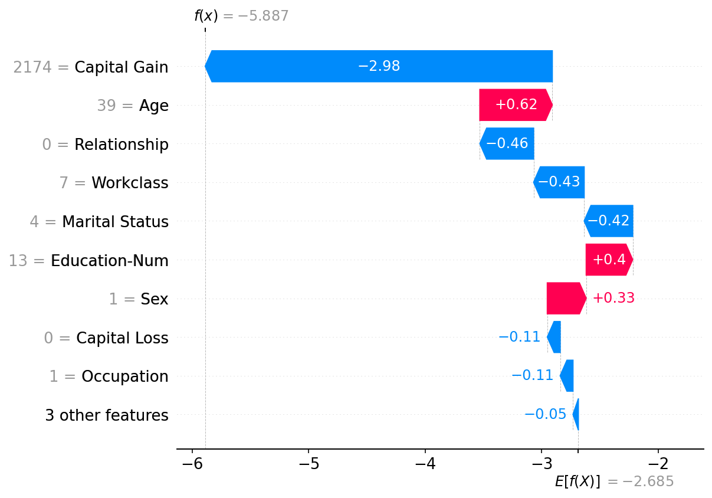
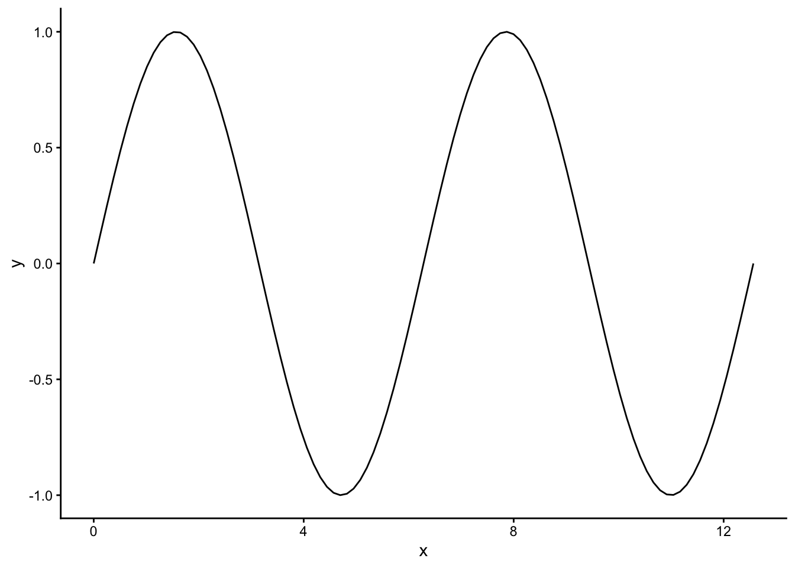
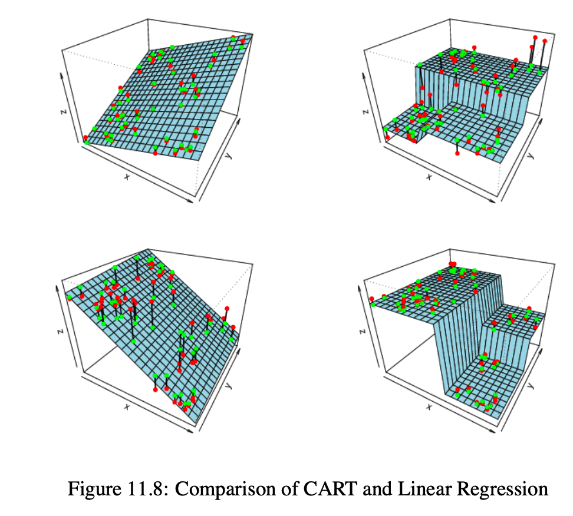
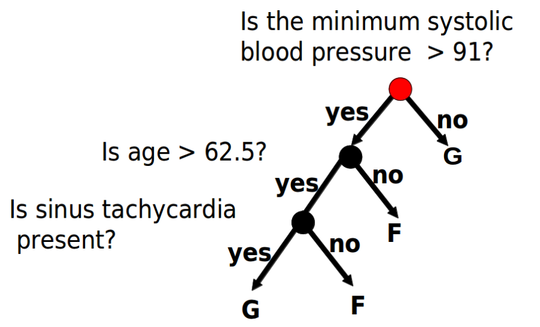
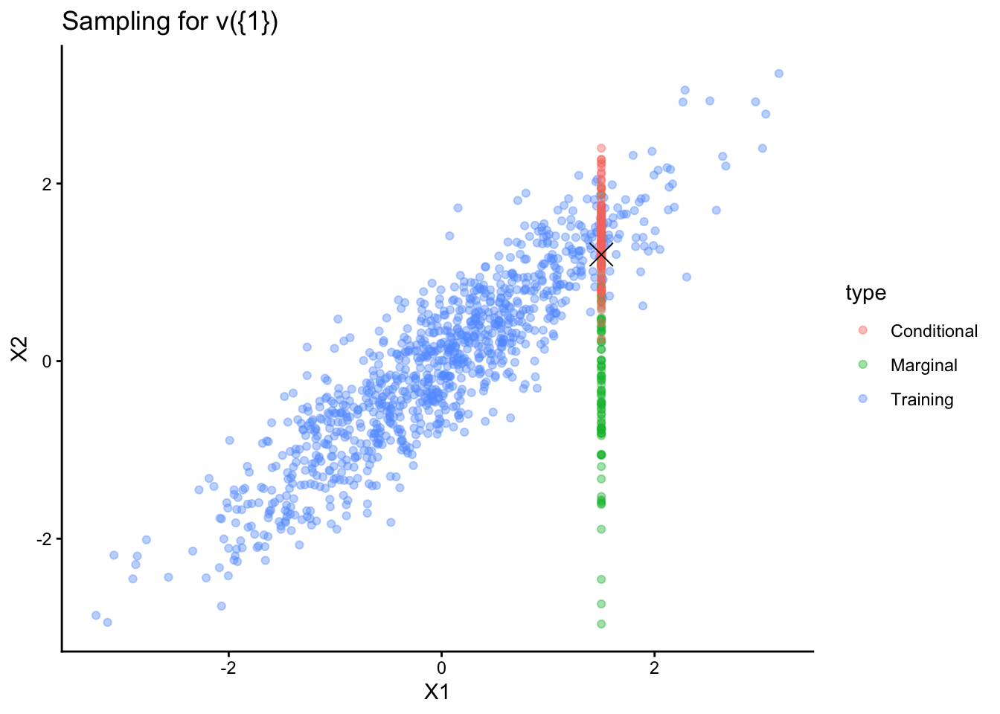
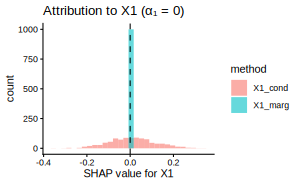
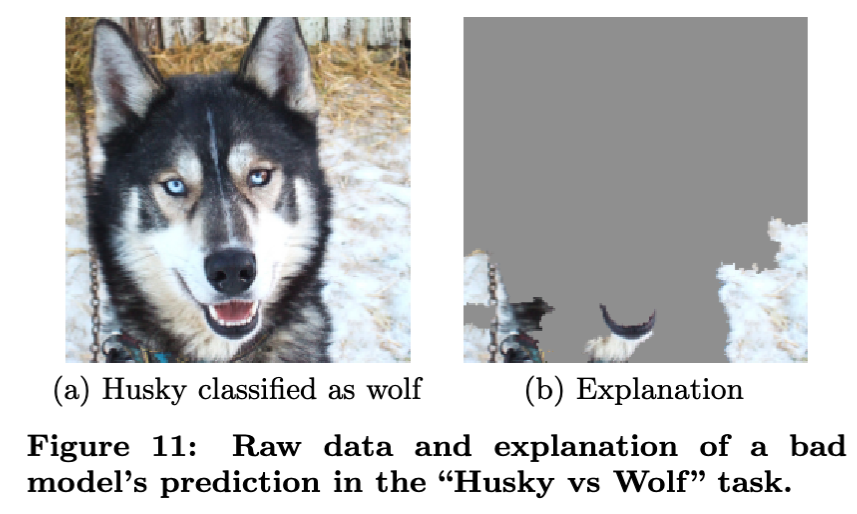

library(RefManageR)
bib <- ReadBib("references.bib")Ignoring entry 'angus2017' (line100) because:
A bibentry of bibtype 'Article' has to specify the field: c("journaltitle", "journal")Lecture Slides
library(RefManageR)
bib <- ReadBib("references.bib")Ignoring entry 'angus2017' (line100) because:
A bibentry of bibtype 'Article' has to specify the field: c("journaltitle", "journal")course logistics
overall motivation
decomposing interpretability
Tuesday
Thursday
Friday (every ~ 3 weeks) * Homework due
materials
Lipton, Z. C. (2018). The Mythos of Model Interpretability. ACM Queue: Tomorrow’s Computing Today, 16(3), 31–57. https://doi.org/10.1145/3236386.3241340
Murdoch, W. J., Singh, C., Kumbier, K., Abbasi-Asl, R., & Yu, B. (2019). Definitions, methods, and applications in interpretable machine learning. Proceedings of the National Academy of Sciences of the United States of America, 116(44), 22071–22080. https://doi.org/10.1073/pnas.1900654116

Example from .

Example from .


In machine learning, most effort is directed towards ensuring models have good performance performance metrics on external benchmark data sets.
Models learning this way can be very accurate according to easily measured criteria like accuracy or computational efficiency but inappropriate with respect to properties that are harder to measure.
The gap between what we want our models to achieve and what we can easily encode in performance metrics is called a formulation gap.
Would you be willing to relinquish control to the model?
The answer depends on how it manages individual cases, not just than overall accuracy.

Typical benchmarks randomly split data into training vs. test sets.
Models are often used in settings that don’t match those original training/test splits.
The use of models might themselves change the distribution of the data (pneumonia example from before).

See (Vern L. Glaser and Safavi, 2023).
Models are often used to support discovery. This is a different task than automation.
While this is often an argument for using “white box” models, black boxes can still support discovery, e.g., by identifying similar cases in a medical diagnosis system.
Models might amplify existing biases if only test accuracy is considered.
Fairness metrics have been defined to help guard against this risk, but there is no universal metric for fairness. Interpretability can help address broader demands for transparency.

Introduce yourself to your neighbors. What is your name and degree program? What are your areas of interest? How might interpretability or explainability be helpful in the work that you do?
Then respond to [Past Experience] in the exercise sheet.
Reference (Murdoch, Singh, Kumbier, Abbasi-Asl, and Yu, 2019) also breaks the vague concept of “interpretability” down into precise elements which can be more formally evaluated.
Together, this helps establish trust in the reliability of the results, which is important in interdisciplinary work.
It also helps protect against unintended consequences that can arise after model deployment.
Predictive Accuracy: The model-to-explain has to be accurate. There is not point “interpreting” a model that gives a poor approximation of reality.
Descriptive Accuracy: The interpretation should be faithful to the model. This is the extent to which the explanation reflects what the black box actually learned, which is not necessarily the same as what it was designed to learn.
Interpretations don’t exist in a vacuum. Like data visualizations, their complexity needs to be suitable to their audience.
For example, we might give three different explanations of the same model depending on whether we are communicating with biologists, clinicians, or statisticians.
Whether the outputs from interpretability outputs are relevant to their audience can be gauged by their adoption in specific scientific settings or how they are actually used by participants in user studies.
Reference (Doshi-Velez and Kim, 2017) notes that new interpretability techniques can be evaluated at several levels.
Functionally-grounded: Define computational proxy tasks that can be measured without studying real users.
Human-grounded: Consider simplified tasks that can be solved by general audience members. This can involve crowdsourcing.
Application grounded: Evaluate in the field with representative experts in a concrete end-use case.
These different types of evaluation can inform one another. For example, we can define new proxy tasks based on the most challenging steps for experts.
New methods that do well in computational proxies are worth investigating through user studies.
Each of these types fo evaluation will come with their own performance metrics.
We will revisit this question periodically as we introduce new methods and study the contexts in which they are worth applying.
intrinsic vs. post-hoc
global vs. local explanation
workflow
Lipton, Z. C. (2018). The Mythos of Model Interpretability. ACM Queue: Tomorrow’s Computing Today, 16(3), 31–57. https://doi.org/10.1145/3236386.3241340
Murdoch, W. J., Singh, C., Kumbier, K., Abbasi-Asl, R., & Yu, B. (2019). Definitions, methods, and applications in interpretable machine learning. Proceedings of the National Academy of Sciences of the United States of America, 116(44), 22071–22080. https://doi.org/10.1073/pnas.1900654116
Intrinsically interpretable: Build a “glass box” from the start. The model is interpretable by design—its structure allows us to understand how it works.
Post Hoc: Inspect an already trained “black box” model, which can be chosen simply to maximize accuracy without regard to interpretability. Post-hoc methods extract explanations from models that weren’t designed to be understood

Some properties that make a model intrinsically interpretable are:
We define these on the next few slides.
A model is sparse if the number of non-zero parameters is small relative to the total number of available parameters.
This is interpretability property is motivated by Occam’s razor: The simplest explanation is likely closest to the truth.
Sparsity enhances interpretability only when it correctly captures the structure of the true data-generating process. If the true relationship depends on many features, imposing sparsity introduces bias.
A model is simulatable if it’s possible to manually compute its output for any input within a reasonable time. Both the number of model parameters and the inference complexity factor in.
A model is modular if its prediction function \(f(x)\) can be decomposed into interpretable components, each of which can be analyzed independently.
One example is an additive decomposition, where the function can be written as,
\[\begin{align*} f\left(x\right) = b_{0} + \sum_{j = 1}^{J}f_{j}\left(x_{j}\right) \end{align*}\]
and each \(f_{i}\) operates on only a single coordinate of the input \(x\).
More generally, a model is modular if subsets of its parameters or computations can be viewed as separate, interpretable units.
Some common strategies for explaining black box models include,
Feature importances
Feature attributions
Model distillations
A few examples are given on the next few slides, but first we should distinguish between global and local explanations.
A global explanation characterizes how a model behaves across all possible inputs.
These explanations are valuable in scientific studies, where we usually look for universal rules relating sets of variables.

According to this plot, the variables X4, X2, and X1 seem most important across three separate tree-based models (weeks 4 - 5).

A local explanation describes why a model made a specific prediction for a particular input. The relationships it finds may be unique to that example.
These are especially helpful in auditing high-stakes decisions made in specific cases, e.g. loan approvals, medical diagnoses, parole decisions.
In vision models, one use case of local explanations is to identify the parts of an image that are “most important” for particular predicted classes.

For this sample, the most “important” feature is Capital Gain. It is responsible for much of the negative prediction \(f\left(x\right)\), in a sense that will be made precise when we discuss SHAP.

For many datasets, simple models (like decision trees) offer high descriptive accuracy but have lower predictive accuracy compared to more complex models (like random forests).
Similarly, deep neural networks might predict the future well but not be amenable to accurate descriptions in PDR sense.
One intuition for this tradeoff comes from the bias variance tradeoff. More complex models have lower bias, and if we have lots of data, variance is less of a concern.

Unlike the bias-variance tradeoff, which has a precise mathematical foundation, the interpretability-accuracy tradeoff is more of a heuristic, and some have argued that it can be misleading (Rudin, 2019).
If applied systematically, techniques from interpretability can be used to check assumptions, identify data and model quality issues, and uncover surprising relationships. The steps below expand on ideas in (Murdoch, Singh, Kumbier et al., 2019).
%%{init: {'theme':'forest', 'themeVariables': {'fontSize':'36px', 'fontFamily':'arial'}, 'flowchart': {'padding': 80}}}%%
graph LR
A[Design] --> B[Predictive <br/> Accuracy]
B --> C[Stability]
C --> D[Explanation <br/> Comparisons]
D --> E[External <br/> Checks]
First consider the underlying data collection mechanism. This is essential context for any downstream interpretation.
Were the data purely observational, and if so, what led to a sample being observed (or missed)?
If it is from an experiment, which aspects were controlled? In what ways is the experimental system representative of the end-use?
Measure the model’s fit to the data using some measure of performance accuracy on a test set.
The test set should mimic what would be encountered during deployment as closely as possible, even though this is impossible in situations where the environment is always changing.
Next we can apply our interpretability technique. We should pay attention to descriptive accuracy. For example,
How many features do we need before the SHAP approximation matches the full model prediction (Week 6 - 7)?
How closely does the distilled model match the original model’s predictions (Week 10)?
If using permutation importance, are the permuted data plausible, or do they lie outside the training data (Week 4)?
Are the interpretations robust to perturbations?
Data perturbations: Do the same interpretations appear when using different subsamples?
Hyperparameter perturbations: Do the same interpretations across similar hyperparameters?
Model perturbations: If using a post-hoc explanation, we can see whether the same features arise across multiple models?
Apply multiple interpretation methods to the same model.
If methods give contradictory results, then at least one has low descriptive accuracy.
Test interpretations against domain knowledge or experimental results. If the interpretation claims feature \(j\) is important, then can be checked by
The talk (Kim, 2022) describes how interpretability bridges human and machine “concepts.”

This bridge is especially important in collaborative work! Data science never exists in a vacuum.
motivating case study
linear models
sparse linear models
bias variance trade-off
Patients with the same diagnosed cancer often respond very differently to the same drug. How can we figure out which drugs any particular patient will respond to?
If we imagine drug effectiveness = f(gene activity), then one approach is to measure activity of genetic pathways in biopsies of that patient’s cancer tissue.
The most important features in that model can be used to stratify patients into different responder/non-responder subtypes.
To learn this relationship, previous studies used “immortalized” cancer cell lines. These doesn’t fully represent the complexity of cancer in real populations.
The study (Dietrich, Oleś, Lu, Sellner, Anders, Velten, Wu, Hüllein, da Silva Liberio, Walther, Wagner, Rabe, Ghidelli-Disse, Bantscheff, Oleś, Słabicki, Mock, Oakes, Wang, Oppermann, Lukas, Kim, Sill, Benner, Jauch, Sutton, Young, Rosenquist, Liu, Jethwa, Lee, Lewis, Putzker, Lutz, Rossi, Mokhir, Oellerich, Zirlik, Herling, Nguyen-Khac, Plass, Andersson, Mustjoki, von Kalle, Ho, Hensel, Dürig, Ringshausen, Zapatka, Huber, and Zenz, 2017) measured drug responses in samples from primary patients who were being treated for blood cancer (CLL). They simultaneously measured gene expression and DNA methylation activity (we will skip over some the biology, but happy to discuss this with anyone who’s interested).
Features - 121 samples from CLL patients - 61 drugs, 5 dosages per drug - 9553 features total
Outcome - Cell viability: Percentage of surviving cells after drug exposure
For a given drug treatment profile, which RNA or methylation features differentiate between drug sensitivity vs. resistance?
01-linear_model.qmd: “Exploration”Viability can be viewed as a response variable \(y \in \mathbb{R}^{N}\), and the molecular variables can be treated as features \(X \in \mathbb{R}^{N \times J}\). Here
The setting is high-dimensional with few samples compared to features. Without some sort of regularization (like a sparsity assumption), the problem is underdetermined, since \(N = 121, J = 9553\).
Sparsity will help us focus on the most important pathways out of thousands of candidates.
This was a real study! Linear models are not just for class work…they are a practical tool in science.
Imagine modeling viability \(y_{i}\) for sample \(i\) as a linear function of a single gene’s expression level \(x_{i} \in \mathbb{R}\):
\[\begin{align*} y_i=\beta_0+x_{i 1} \beta_1+\epsilon_i \end{align*}\]
The least-squares estimate \(\hat{\beta} := \left(\hat{\beta}_{0}, \hat{\beta}_{1}\right)\) is found by minimizing
\[\begin{align*} \min_{\beta_0, \beta_1} \sum_{i = 1}^{N}\left(y_i-\beta_0-x_{i} \beta_1\right)^2 \end{align*}\]
That visualization considered \(x_{i}\) to be continuous, but the same idea applies to categorical predictors. For example, \(x_{i} \in \{0, 1\}\) could record whether the patient has a mutation in a particular gene.
\(\beta_0\): The expected viability for the reference group (\(x_{i} = 0\)).
\(\beta_1\): The difference in expected viability between the mutated \(x_{i} = 1\) and reference groups
Assumed model form:
\[\begin{align*} y_{i} &= \sum_{j = 1}^{n}x_{ij}\beta_{j} + \epsilon_{i} \\ &:= \mathbf{x}_{i}^\top \beta_{j} + \epsilon_{i} \end{align*}\]
\(\epsilon_{i}\) represents random variation due to unmeasured factors.
This model assumes the effect of feature \(j\) on \(y\) is constant regardless of the value of \(x_{k}\) for any other feature \(k\).
\[\begin{align*} \min_{\beta} \sum_{i=1}^N \left( y_i - \mathbf{x}_i^\top \beta \right)^2 \end{align*}\]
We can imagine how viability changes when changing the expression levels for two genes simultaneously.
If we include a continuous pathway measurement and a binary mutation, the model generates one line per category, and the lines are parallel.
“All other things being equal”.
\(\beta_j\) gives the impact of changing \(x_j\) while every other feature \(k\) in the model is fixed.
Warning: In our application, genes are often highly correlated. Holding other genes “fixed” is not realistic. This should be kept in mind whenever working with correlated features.
If we had \(J = 2\), we can consider two-way interactions,
\[\begin{align*} y_{i} = \beta_{0} + x_{1}\beta_{1} + x_{2}\beta_{2} + x_{1}x_{2}\beta_{3} + \epsilon_{i} \end{align*}\]
the coefficient \(\beta_{3}\) represents the interaction.
The slope of for one gene now depends on the value of another (what does this mean algebraically?)
In our example, a gene might be important only for a particular drug.
If we had many noise features (unrelated to response), least squares will still try finding coefficients for each of them. This causes overfitting: our predictions would depend on variables that don’t actually matter.
We don’t expect all genes to be relevant to cell viability in this experiment. It’s more likely that a few key pathways are driving resistance.
Variable selection: If the noise variables do not reduce the SSE, then the Lasso sets their coefficients \(\beta_{j}\) to exactly zero. The \(\ell^{1}\) penalty “induces sparsity.”
The Lasso objective is \[\begin{align*} \min_{\beta \in \mathbb{R}^J} \left[ \frac{1}{2N} \sum_{i=1}^N \left(y_i - \mathbf{x}_i^\top \beta\right)^2 + \lambda \lVert \beta \rVert_1 \right]. \end{align*}\] This is the same loss as linear regression, but with a new \(\ell^{1}\) penalty
\[\begin{align*} \|\beta\|_{1} := \sum_{j = 1}^{J} \left|\beta_{j}\right| \end{align*}\]
It’s not obvious, but the minimizers often set coordinates \(\beta_{j}\) to exactly zero. The “selected” features are those where \(\beta_{j} \neq 0\).
\[\begin{align*} \min_{\beta \in \mathbb{R}^J} \left[ \frac{1}{2N} \sum_{i=1}^N \left(y_i - \mathbf{x}_i^\top \beta\right)^2 + \lambda \lVert \beta \rVert_1 \right]. \end{align*}\]
\(\lambda\) is a hyperparameter that controls model complexity.
As \(\lambda \uparrow \infty\), all coefficients shrink toward zero. As \(\lambda \downarrow 0\), we return to OLS.
We can study the “order” that variables enter the model as we gradually decrease \(\lambda\). We expect the most important predictors (e.g., drug response-related genes) to enter first.
What is an appropriate “budget” for model complexity?
Bias-Variance Trade-off: Decreasing \(\lambda\) reduces bias but increases the variance of the predictions.
We need to tune \(\lambda\) to balance these competing issues and achieve good performance on holdout samples.
Split the data into \(K\) folds (e.g., \(K = 5\)). Fit the model on \(K−1\) folds and tested on the remaining fold. This mimics the setting of gathering new data and testing the model on that data.
(show the glmnet curve)
\(\lambda_{\text{min}}\): Minimizes the cross-validation error.
\(\lambda_{\text{1se}}\): The simplest model, i.e., largest \(\lambda\), whose error is within one standard error of the minimum. This is a sparser model with comparable performance to the best.
interpreting sparse linear models
application to case study
interpretation challenges
These were the properties of intrinsically interpretable models we introduced earlier.
The \(\ell^{1}\)-penalized linear model focuses our attention on a small subset of selected features where \(\hat{\beta}_{j} = 0\).
The larger the \(\lambda\), the more interpretable the model becomes, since the support set \(S = \{j : \hat{\beta}_{j} \neq 0\}\) shrinks.
A linear model \(\hat{y} = \hat{\beta}_{0} + \sum_{j \in S} x_j \hat{\beta}_{j}\) is reasonably simulatable when \(|S|\) is small.
But for even moderate to large \(|S|\), simulatability becomes a challenge even for linear regression (Slack, Friedler, Scheidegger, and Roy, 2019)!
The model is additive: \(f(x) = \sum_{j = 1}^{J}f_j(x_j)\).
We can inspect the influence of gene \(j\) using a single coefficient \(\beta_{j}\).
But even in linear regression, ceteris paribus means each coefficient has to be understood relative to all other features in the model.
Global: \(\hat{\beta}\) helps us identify the most influential genes across the study.
Local: For cell \(i\), the \(x_{ij}\hat{\beta}_{j}\) terms help us understand its particular viability prediction.
Response (\(y\)): Cell viability after drug treatment.
Predictors (\(X\)): High-dimensional molecular profiles \(N = 121, J = 9553\).
Goal: Identify a sparse set of features that distinguish drug sensitive vs. resistant cells.
We use the glmnet package in R:
# Fit the lasso path and perform 10-fold CV
cv_fit <- cv.glmnet(X, y, alpha = 1, standardize = TRUE)This solves the optimization problem for a sequence of \(\lambda\) values using cyclical coordinate descent.
These boxplots show the performance on the holdout folds across a range of \(\lambda\) complexity parameters. For each \(k = 1, \dots, 10\), we compute
\[\begin{align*} CV_{k}\left(\lambda\right) = \frac{1}{N} \sum_{i \in I_{k}} \left(y_{i} - \hat{y}_{i}^{-k}\left(\lambda\right)\right)^2 \end{align*}\] where \[\begin{align*} y_{i}^{-k}\left(\lambda\right) := x_{i}^\top \hat{\beta}^{-k}\left(\lambda\right) \end{align*}\] and \(\hat{\beta}^{-k}\left(\lambda\right)\) solves the lasso optimization at hyperparameter \(\lambda\) using data from all folds except \(I_{k}\).
The initial decrease is the phase where adding predictors rapidly improves performance. Usually the boxplots increase again for small values of \(\lambda\), at which point the model is overfitting.
We use \(\lambda_{1\text{se}}\) to choose the simplest model whose error is within one standard error of the minimum MSE. This is the point where adding new genes doesn’t significantly add to the holdout prediction accuracy.
It’s important to transform \(x_{ij} \to \frac{x_{ij} - \bar{x}_j}{\hat{\sigma}_j}\).
The penalty \(\lambda \sum |\beta_j|\) treats all \(\beta_j\) equally. If \(x_j\) has a large scale, its \(\beta_j\) will be small, making it “cheaper” for the penalty to keep it in the model.
We can visualize how \(\hat{\beta}_j\) evolves as \(\lambda\) decreases.
Each line represents a gene (RNA or methylation feature). The order in which they “emerge” from zero indicates their relative importance in predicting drug response.
To make it easier to see the feature names, we can use a heatmap instead.
In this problem, all the coefficients were positive, so we log-transformed to more clearly see differences in coefficient value.
This helps us focus on a much more reasonable set of important genomic features. We can also find extenral evidence that these genes are involved in important oncogenic pathways.
Sparse linear models narrowed us down from 9K+ features to 37 that are enough to predict drug sensitivity with relatively high accuracy.
In this problem, standardization was essential. We are lucky that it is the default in glmnet, but this isn’t always the case.
The original scale of the features might be informative. By standardizing features, we might be giving undue weight to noise features with low variability.
Are there distinct gene pathway signatures for different drugs? In this case, we should consider either drug-pathway interaction terms or drug-specific classifiers.
The Problem: When predictors are highly correlated, the \(\hat{\beta}\) estimated by lasso becomes unstable.
Small changes in the training data can cause the lasso to switch between two highly correlated genes, leading to conflicting interpretations of the same underlying signal.
(todo)
Design: Take two highly correlated genes (\(r > 0.9\)) and use them to predict viability.
Experiment: Generate 100 bootstrap resamples of the CLL data and fit a lasso model to each.
(todo)
Observe how often each gene is selected.
In many cases, the lasso will pick Gene A in 50% of the trials and Gene B in the other 50%, even if both are equally important.
Selection \(\neq\) Importance
More generally, we careful applying sparse models on correlated data. There may be many plausible, equally predictive explanations based on different subsets of features.
Often, people assume that to get higher accuracy, we need “black-box” models (like deep learning or Random Forests) and sacrifice interpretability.
But in many scientific problems (like today’s case study, see also (, )), sparse linear models are surprisingly competitive, while remaining more interpretable to more audiences. It depends on the true relationship between predicators and response in the data.
motivating case study
kernels
GP regression
tuning
Görtler, J., Kehlbeck, R., & Deussen, O. (2019). A visual exploration of Gaussian processes. Distill, 4(4). doi:10.23915/distill.00017
Deisenroth, M., Luo, Y., & van der Wilk, M. (2020). A practical guide to Gaussian processes. https://infallible-thompson-49de36.netlify.app/.
Question: How quickly does a star rotate around its axis? This has to be answered accurately before we can search for exoplanets around the star.
Data: Telescopes make it possible to measure the brightness of a star over time. We can look for periodic patterns in the brightness.

Ideally the brighness would be a perfect sine wave. But brightness changes in more complex ways both on the surface of the star and in the space from the star to the telescope.

── Attaching core tidyverse packages ──────────────────────── tidyverse 2.0.0 ──
✔ dplyr 1.1.4 ✔ readr 2.1.5
✔ forcats 1.0.1 ✔ stringr 1.5.2
✔ ggplot2 4.0.0 ✔ tibble 3.3.0
✔ lubridate 1.9.4 ✔ tidyr 1.3.1
✔ purrr 1.1.0
── Conflicts ────────────────────────────────────────── tidyverse_conflicts() ──
✖ dplyr::filter() masks stats::filter()
✖ dplyr::lag() masks stats::lag()
ℹ Use the conflicted package (<http://conflicted.r-lib.org/>) to force all conflicts to become errors
How does flux vary as the star rotates?

Formulation.
Goal. Infer \(P\) to understand stellar activity and improve exoplanet detection
Modeling. We need a statistical model of functions that:
Linear regression makes predictions using
\[\begin{align*} \mathbb{E}[y | \mathbf{x}] = \mathbf{x}^\top \boldsymbol{\beta}. \end{align*}\]
Geometrically, predictions at nearby points should be similar.
What does “nearby” mean? In linear regression, \[\begin{align*} \mathbf{x}^\top \mathbf{x}' \end{align*}\] measures closeness (show the covariance calculation).
Kernel answer: Define closeness explicitly.
\[\begin{align*} k(\mathbf{x}, \mathbf{x}') = \text{how much } f\left(\mathbf{x}\right) \text{ and } f\left(\mathbf{x'}\right) \text{should covary} \end{align*}\]
The function \(k\) is called a “kernel”.
\[k_{\text{RBF}}(x, x') = \sigma_f^2 \exp\left(-\frac{\|x - x'\|^2}{2\ell^2}\right)\]

\[\text{Correlation} = \exp\left(-\frac{\tau^2}{2\ell^2}\right), \quad \tau = |x - x'|\]
Small \(\ell\) (relative to data range)
Long lengthscale:
\[\text{Correlation} = \exp\left(-\frac{\tau^2}{2\ell^2}\right), \quad \tau = |x - x'|\]

\[k_{\text{per}}(x, x') = \sigma_f^2 \exp\left(-\frac{2\sin^2(\pi|x-x'|/p)}{\ell^2}\right)\]
Parameters:

This will help us model stellar rotation.
\[k_{\text{Matérn-3/2}}(x, x') = \sigma_f^2\left(1 + \frac{\sqrt{3}\tau}{\ell}\right)\exp\left(-\frac{\sqrt{3}\tau}{\ell}\right)\]
\[k_{\text{Matérn-5/2}}(x, x') = \sigma_f^2\left(1 + \frac{\sqrt{5}\tau}{\ell} + \frac{5\tau^2}{3\ell^2}\right)\exp\left(-\frac{\sqrt{5}\tau}{\ell}\right)\]
Unlike RBF: Finite differentiability
(You don’t need to memorize these formulas!)
We haven’t yet explained how these samples are generated, but samples that use a Matérn kernel are often “rougher” are more realistic.


If \(k_1\) and \(k_2\) are valid kernels, so are
\[\begin{align*} k_{\text{sum}}(x, x') = k_1(x, x') + k_2(x, x') (\text{ superposition})\\ k_{\text{prod}}(x, x') = k_1(x, x') \times k_2(x, x') (\text{ modulation}) \end{align*}\]
Addition is like two independent phenomena occuring at once.
If \(k_1\) and \(k_2\) are valid kernels, so are
\[\begin{align*} k_{\text{sum}}(x, x') = k_1(x, x') + k_2(x, x') (\text{ superposition})\\ k_{\text{prod}}(x, x') = k_1(x, x') \times k_2(x, x') (\text{ modulation}) \end{align*}\]
Multiplication is like where one pattern modulates another.
Since kernels are closed using these algebraic operations, they can be tailored to the specific problem of interest.

Definition. A Gaussian Process (GP) is a collection of random variables, any finite subset of which is jointly Gaussian
\[f \sim \mathcal{GP}(m(\mathbf{x}), k(\mathbf{x}, \mathbf{x}'))\]
This can be used to define a prior distribution over functions. \[\mathbf{f} = [f(x_1), \ldots, f(x_N)]^\top \sim \mathcal{N}(\boldsymbol{\mu}, \mathbf{K})\]
where \(\mu_i = m(x_i)\) and \(K_{ij} = k(x_i, x_j)\) WE often set \(m(\mathbf{x}) = 0\).
Classical statistics Estimate fixed-dimensional parameters \(\theta\) of a function.
GPs Estimate the entire function \(f\).
Observation This seems impossible, since functions are infinite-dimensional. But we only observe \(f\) at finitely many points, \[\begin{align*} \mathbf{f}_{N} = \left(f\left(x_1\right), \dots, f(x_N)\right) \end{align*}\] and a GP can give us a prior for any choice of \(x_{1}, \dots, x_{N}\).
This is what it means to define a “distribution over functions.”
Covariance matrix \(\mathbf{K}\):
Kernel encodes our assumptions about function smoothness, periodicity, trends, etc.

Each sample is one plausible function from our prior
Different kernels → different classes of functions
So far we have only described a prior over functions. How does that prior relate to the observed data \(y_{i}\)?
We imagine \[\begin{align*} y_i = f(x_i) + \epsilon_i, \quad \epsilon_i \sim \mathcal{N}(0, \sigma_n^2) \end{align*}\] conditional on a draw \(f\) from the GP prior.
This results in the joint distribution, \[\begin{bmatrix} \mathbf{f}_* \\ \mathbf{y} \end{bmatrix} \sim \mathcal{N}\left(\mathbf{0}, \begin{bmatrix} \mathbf{K}_{**} & \mathbf{K}_{*\text{train}} \\ \mathbf{K}_{\text{train}*} & \mathbf{K}_{\text{train}} + \sigma_n^2\mathbf{I} \end{bmatrix}\right)\]
Now we condition on observed \(\mathbf{y}\) to get a posterior for the actual \(f\) that generated the data. The Gaussian conditioning formula gives
\[p(\mathbf{f}_* | \mathbf{y}, \mathbf{X}, \mathbf{x}_*) = \mathcal{N}(\boldsymbol{\mu}_*, \boldsymbol{\Sigma}_*)\] where
\[\begin{align*} \boldsymbol{\mu}_* &= \mathbf{K}_{*\text{train}}(\mathbf{K}_{\text{train}} + \sigma_n^2\mathbf{I})^{-1}\mathbf{y}\\ \boldsymbol{\Sigma}_* &= \mathbf{K}_{**} - \mathbf{K}_{*\text{train}}(\mathbf{K}_{\text{train}} + \sigma_n^2\mathbf{I})^{-1}\mathbf{K}_{\text{train}*} \end{align*}\]
The next few slides interpret this formula.
\[\begin{align*} \boldsymbol{\mu}_*=\mathbf{K}_{* \text { train }}\left(\mathbf{K}_{\text {train }}+\sigma_n^2 \mathbf{I}\right)^{-1} \mathbf{y} \end{align*}\]

\[\begin{align*} \boldsymbol{\Sigma}_* = \mathbf{K}_{**} - \mathbf{K}_{*\text{train}}(\mathbf{K}_{\text{train}} + \sigma_n^2\mathbf{I})^{-1}\mathbf{K}_{\text{train}*} \end{align*}\]

# Periodic × Decay kernel
k_periodic <- periodic(period = exp(logperiod),
lengthscale = 1,
variance = exp(logamp))
k_decay <- mat52(lengthscale = exp(logdecay),
variance = 1)
full_kernel <- k_periodic * k_decay + white(exp(logs2))
# Define GP
gp_model <- gp(data$time, full_kernel)
distribution(data$flux) <- normal(gp_model + mean_flux, data$flux_err)[Posterior and prior predictive distributions].
Fix a point \(x_{\ast}\) of interest. Before we observe any data \(y_{1}, \dots, y_{n}\), what would your best guess of \(y_{\ast}\) be? How much uncertainty would you have? How does this differ from your best guess for \(f_{\ast}\)?
Suppose you have now observed data \(y_{1}, \dots, y_{n}\) at \(x_{1}, \dots, x_{n}\). We again ask you for a guess of \(y_{\ast}\) at \(x_{\ast}\). How has it changed?
[Optional]. The quantity in the previous part has a Gaussian distribution. Can you derive formulas for \(\mu_{*}\) and \(\sigma_{*}^2\)?
\[p(y_* | \mathbf{y}, \mathbf{X}, x_*) = \mathcal{N}(\mu_*, \sigma_*^2 + \sigma_n^2)\]
Ignoring entry 'angus2017' (line100) because:
A bibentry of bibtype 'Article' has to specify the field: c("journaltitle", "journal")Görtler, J., Kehlbeck, R., & Deussen, O. (2019). A visual exploration of Gaussian processes. Distill, 4(4). doi:10.23915/distill.00017
Deisenroth, M., Luo, Y., & van der Wilk, M. (2020). A practical guide to Gaussian processes. https://infallible-thompson-49de36.netlify.app/.
Q: How do we choose hyperparameters \(\theta = \left(\ell, \sigma_f, \dots, \right)\)
A: Find \(\theta\) that makes the observed data \(\mathbf{y}\) most probably:
Marginal likelihood
\[p(\mathbf{y} | \mathbf{X}, \theta) = \int p(\mathbf{y} | \mathbf{f}, \mathbf{X}) p(\mathbf{f} | \mathbf{X}, \theta) d\mathbf{f}\]
This “marginalizes” over all possible functions \(\mathbf{f}\).
For the GP model, this has a closed form:
\[\log p(\mathbf{y} | \mathbf{X}, \theta) = -\frac{1}{2}\mathbf{y}^\top(\mathbf{K} + \sigma_n^2\mathbf{I})^{-1}\mathbf{y} - \frac{1}{2}\log|\mathbf{K} + \sigma_n^2\mathbf{I}| + \text{const}\]
This has two competing terms – data fit vs. model complexity.
Consider fitting a sine wave with noise. How would you choose the RBF \(\ell\)?
Very small \(\ell\) (underfitting)
Very large \(\ell\) (overfitting)
The right choice of \(\ell\) will be flexible enough to fit the sine curve but not the noise. The marginal likelihood finds this automatically without any cross-validation.

Observation = Signal + Noise
\[\begin{align*} y = f(x) + \epsilon \end{align*}\]
Variance Decomposition
\[\begin{align*} \underbrace{\operatorname{Var}[y]}_{\text {what we see }}=\underbrace{\sigma_f^2}_{\text {signal }}+\underbrace{\sigma_n^2}_{\text {noise }} \end{align*}\]
Heuristic 1: If the instrument’s precision is known (e.g., Kepler telescope noise \(\sigma_n \approx 10^-4\)), then set \[\begin{align*} \sigma_f^2=\operatorname{Var}[y]-\sigma_n^2 \end{align*}\]
Heuristic 2: Suppose the signal dominates by some assumed SNR factor \(\kappa\) (e.g., 2 - 100). Then set \[\begin{align*} \sigma_{f}^{2} \approx \operatorname{Var}[y]\\ \sigma_{n}^{2} \approx \frac{\sigma_f^2}{\kappa^2} \end{align*}\]
Lengthscale controls how far we travel before \(f(x)\) and \(f(x')\) decorrelate
Heuristic: Set lengthscale relative to spread of input data \[\ell \approx \lambda \cdot \text{SD}[\mathbf{X}], \quad \lambda \in [0.2, 10]\]
Alternative: Use median distance from mean \[\ell \approx \text{median}\{|x_i - \bar{x}|\}\]
> dim(data)
[1] 3822 3
spec <- spectrum(data$flux, pad = 6, plot = FALSE)
There seem to be two periodicities that dominate.
\[k_{\text{rot}} = k_{\text{periodic}} \times k_{\text{decay}}\]
Physical interpretation:
The original source (, ) used a slightly more involved periodoc kernel. It used a similar domain-informed kernel construction though.
This is how we can implement the kernel in R.
k_periodic <- periodic(period = exp(logperiod),
lengthscale = 1,
variance = exp(logamp))
k_decay <- mat52(lengthscale = exp(logdecay),
variance = 1)
full_kernel <- k_periodic * k_decay + white(exp(logs2))Hyperparameters
logperiod: \(\log p\) (rotation period)logdecay: \(\log \ell_{\text{decay}}\) (spot lifetime)logamp: \(\log \sigma_f^2\) (signal variance)logs2: \(\log \sigma_n^2\) (noise variance)mean_flux <- normal(0, 1)
logs2 <- normal(-1, 2)
logamp <- normal(log(var(data$flux)), 2)
logperiod <- normal(log(25), 2)
logdecay <- normal(log(25 * 3), 2)Rationale
logperiod ~ N(log(25), 2): Centered at periodogram guess, but widelogdecay ~ N(log(75), 2): Lasts ~3 rotation periodslogamp ~ N(log(Var[y]), 2): Signal variance ~ data variancelogs2 ~ N(-1, 2): Relatively small noisegp_model <- gp(data$time, full_kernel)
distribution(data$flux) <- normal(gp_model + mean_flux,
data$flux_err)
m <- model(logperiod, logdecay, logamp, logs2, mean_flux)
map_soln <- opt(m, initial_values = start_vals)This helps us find a mode of the posterior as starting point for MCMC.
period_samples <- exp(draws[, "logperiod"])
Each draw here is a plausible function \(f(t)\) consistent with data and kernel
time_grid <- seq(min(data$time), max(data$time), length.out = 1000)
gp_array <- project(gp_model, time_grid)
gp_samples <- calculate(gp_array, values = draws)[[1]]project evaluates the GP posterior distribution at the specified time_grid.
Observations

The kernel is a hypothesis about the data generating process.
What we learned
The GP is not just fitting curves, it’s extracting astrophysics.
Problem: Computing \(\left(\mathbf{K} + \sigma_n^2 I\right)^{-1}\) on a computer.
The condition number measures is the ratio of the largest and smallest eigenvalues of this matrix:
\[\kappa = \frac{\lambda_{\max}}{\lambda_{\min}}\]
Problem: Large \(\kappa\) → numerical instability in matrix inversion
For GPs, we can bound \(\kappa \leq N\alpha^2 + 1\) where \(\alpha = \frac{\sigma_f}{\sigma_n}\).
Paradoxically, high-quality data and larger sample sizes create numerical problems!
When does \(\left(K + \sigma_n^2\right)\) become nearly singular?
Scenario 1: Nearly identical rows
Scenarios 2: Noise-free limit

Heuristic. Add small “jitter” to the diagonal
\[\begin{align*} \mathbf{K} + \sigma_n^2\mathbf{I} \to \mathbf{K} + (\sigma_n^2 + \epsilon^2)\mathbf{I} \end{align*}\]
Typically \(\epsilon ~ 10^{-6} - 10^{-4}\).
Input standardization \[\tilde{x} = \frac{x - \bar{x}}{\text{SD}[x]}\]
Also have to rescale \(\ell \to \ell / \text{SD}[x]\)
Output centering \[\tilde{y} = y - \bar{y}\]
We used this in the stellar variability study.
See 03-prep.ipynb.
GPs do well on all five… deep learning fails 2 - 5.
Linear regression
Gaussian processes
Both GPs and linear regression are interpertable, but in different senses.
Limitations:
Extensions:
[GP Missing Data] Rerun the case study notebook with a window of observations missing. How does it affect the posterior on the period? What do the posterior predictive samples look like?
data_model <- data |>
arrange(time) |>
filter(time < 1210 | time > 1220) |>
dplyr::slice(seq(1, n(), by = 10))motivating case study
trees and partitions
growing and pruning
tuning and stability

The study (GERBER, GREEN, and LARIMER, 2008) were interested in how social pressure influences voter turnout. They defined four types of mailers and sent them randomly to potential voters in the Michigan 2006 general election.


On average, those who received the neighbor intervention were more likely to vote.
But are some groups more strongly influenced than others? The statistical term for this is “treatment effect heterogeneity.”
Intuitively, there are some people who are already so jaded (or motivated) that the intervention is unlikely to change their behavior.
Formulation.
Goal. Find subsets of \(\mathcal{X}\) where \(\tau\left(x\right)\) is large: \[\begin{align*} \tau\left(x\right) := \mu\left(x, 1\right) - \mu\left(x, 0\right) \end{align*}\]
Modeling. We need a statistical model that partitions \(\mathcal{X}\) into interpretable subgroups where \(\tau\left(x\right)\) is large.
A tree is a partition \(\mathcal{X} = \cup_{j=1}^J R_j\) where each region \(R_j\) carries constant prediction \(\hat{y}_j\).
Geometry: Axis-aligned recursive bisection. Each split: \(\{x: X_j < s\} \cup \{x: X_j \geq s\}\).
Prediction in \(R_j\):
Regression: Residual sum of squares \[\text{RSS}(T) = \sum_{j=1}^{J} \sum_{i \in R_j} (y_i - \hat{y}_j)^2\]
Classification: Impurity measures (entropy-based)
These measure class mixing. Small values indicate node purity—observations from predominantly a single class.
Greedy algorithm: At each step, select predictor \(X_j\) and cutpoint \(s\) to minimize RSS (regression) or impurity (classification).
Define half-planes: \[R_1(j,s) = \{X|X_j < s\}, \quad R_2(j,s) = \{X|X_j \geq s\}\]
Choose \(j\) and \(s\) minimizing: \[\sum_{i: x_i \in R_1(j,s)} (y_i - \hat{y}_{R_1})^2 + \sum_{i: x_i \in R_2(j,s)} (y_i - \hat{y}_{R_2})^2\]
Repeat: split one of the existing regions until stopping criterion (minimum node size) reached.
Split gain: \[\Delta I = I_{\text{parent}} - \left(\frac{n_L}{n} I_L + \frac{n_R}{n} I_R\right)\]
Numerical: Split at \(X_j < s\). Search over observed values.
Categorical: For \(K\) levels, partition into two subsets. There are \(2^{K-1}-1\) possible binary splits.
Missing values: Use surrogate splits—alternate predictors producing similar partitions.
Use \(K\)-fold cross-validation to select optimal \(\alpha\).
Large trees overfit. For a given \(\alpha \geq 0\), find a subtree \(T \subset T_0\) minimizing: \[\sum_{m=1}^{|T|} \sum_{i: x_i \in R_m} (y_i - \hat{y}_{R_m})^2 + \alpha |T|\] where \(|T|\) counts terminal nodes.
\(\alpha\) penalizes complexity. When \(\alpha = 0\), optimal subtree is \(T_0\). As \(\alpha\) increases, optimal subtree shrinks.
Weakest link pruning. As \(\alpha\) increases from zero, branches are removed in nested fashion. Computing the entire sequence of optimal subtrees is efficient.
Select \(\alpha\) by cross-validation. Standard lasso-type tradeoff.
Axis-alignment: Splits perpendicular to coordinate axes. Capturing diagonal boundaries requires many nodes – have to approximat a smooth functions with a “staircase.”
Instability: Small data perturbations can change the root split, hence the entire tree structure. High variance estimator.
Correlated predictors: Among \(X_i \approx X_j\), choice is arbitrary. Importance measures become meaningless.
Piecewise constant on axis-aligned rectangles vs. global plane.
Tree model: \[f(X) = \sum_{m=1}^M c_m \cdot \mathbb{1}_{(X \in R_m)}\]
Linear model: \[f(X) = \beta_0 + \sum_{j=1}^p X_j \beta_j\]

The original motivation were trees that doctor’s had created informally (Breiman, Friedman, Olshen, and Stone, 2017).

Respond to [Split Choice Visual Explanation] in the exercise sheet.
application to case study
data-driven basis interpretation
MDI+
comparing importance measures
Data. 344,084 observations - Control group: 191,243 - Treatment groups (civic duty, hawthorne, household, neighbor): ~38,200 each
Predictors. Voting history (5 binary indicators for past elections) and age
Question. Which voters respond most to social pressure treatments?
Learn partition \(\{R_j\}\) of predictor space using only non-treatment variables.
Estimate treatment effect \(\tau(x)\) within each region \(R_j\): \[\hat{\tau}_j = \bar{y}_j^{\text{treated}} - \bar{y}_j^{\text{control}}\]
This identifies treatment effect heterogeneity.
Cross-validate complexity parameter \(cp \in [0.0001, 0.1]\).
Optimal tree balances partition refinement against generalization.
[Include visualization of fitted tree]
[Include figure showing \(\hat{\tau}_j\) across regions]
Target group. Treatment effects concentrated among occasional voters within specific age groups.
Zero-effect regions. “Always voters” and “never voters” show minimal treatment response.
For feature \(X_k\), add the impurity reductions across all splits on \(X_k\): \[\text{MDI}_k = \sum_{s \in S^{(k)}} \frac{N(t(s))}{n} \hat{\Delta}(s)\]
where \(S^{(k)}\) are splits using \(X_k\), \(N(t(s))\) is node size, and: \[\hat{\Delta}(s) = \frac{1}{N(t)} \left[\sum_{i \in t} (y_i - \bar{y}_t)^2 - \sum_{i \in t_L} (y_i - \bar{y}_{t_L})^2 - \sum_{i \in t_R} (y_i - \bar{y}_{t_R})^2\right]\]
Problem. MDI has a bias towards high-cardinality features and is unstable when features are correlated.
Observation (Klusowski and Tian, 2023). A decision tree with splits \(S = \{s_1, \ldots, s_m\}\) is equivalent to linear regression on transformed features.
For each split \(s\) of node \(t\) on feature \(X_k\) at threshold \(\omega\), define: \[\phi(x; s) = \frac{N(t_R) \mathbb{1}\{x \in t_L\} - N(t_L) \mathbb{1}\{x \in t_R\}}{\sqrt{N(t_L) N(t_R)}}\]
Feature map. \(\Phi(x; S) = (\phi(x; s_1), \ldots, \phi(x; s_m))\) Tree predictions \(\hat{f}(x)\) equal OLS predictions on \(\Phi(X; S)\).
Each split \(s\) creates a decision stump, an indicator showing whether \(x\) falls left, right, or outside node \(t\).
The matrix \(\Phi(X; S) \in \mathbb{R}^{n \times m}\) is the learned basis from the tree structure.
Tree model: \(f(x) = \beta_0 + \sum_{j=1}^m \beta_j \phi_j(x)\)
This is just linear regression in the \(\phi\) coordinates.
Partition splits by feature: \(S = S^{(1)} \cup \cdots \cup S^{(p)}\)
Let \(\Phi^{(k)}(X; S)\) be stumps splitting on \(X_k\).
Theorem. \[\text{MDI}_k = \text{TSS} \cdot R^2(y, \hat{y}^{(k)})\]
where \(\hat{y}^{(k)}\) are fitted values regressing \(y\) on \(\Phi^{(k)}(X; S)\) alone.
MDI measures how much variance \(X_k\) explains using only its splits.
MDI evaluates \(R^2\) on the same data used to build the tree.
This is data snooping! Features that happened to reduce training RSS get inflated importance.
Worse: tree construction already biases toward high-cardinality features and is unstable under correlation.
Replace in-sample \(R^2\) with proper out-of-sample evaluation.
Given tree \(S\) trained on bootstrap sample \(D_n^*\):
Step 1. Create augmented feature map \[\tilde{\Phi}^{(k)}(X) = [\Phi^{(k)}(X), X_k]\]
Step 2. Fit regularized GLM \(M\) on full data using \(\tilde{\Phi}(X)\). Tune penalty \(\lambda\) via approximate LOO.
Step 3. For each feature \(k\) and observation \(i\), compute LOO partial prediction: \[\hat{y}_i^k = g^{-1}\left(\sum_{j \neq k} \bar{\tilde{\phi}}_j \hat{\beta}_j + \tilde{\Phi}^{(k)}(x_i) \hat{\beta}_{-i}^{(k)}\right)\]
where \(\hat{\beta}_{-i}^{(k)}\) are coefficients fitted without observation \(i\).
Step 4. Measure similarity between \(y\) and \(\hat{y}^{(k)} = (\hat{y}_1^k, \ldots, \hat{y}_n^k)\): \[\text{MDI}_k^+ = m(y, \hat{y}^{(k)})\]
Augmentation. Trees partition with axis-aligned rectangles. Adding raw \(X_k\) captures linear/smooth effects the stumps miss.
Regularization. High-dimensional, correlated features from stumps + raw variables need to be stabilized.
LOO. Separates training from evaluation. Prevents overstating importance of features that fit training noise.
GLM flexibility. Use logistic regression for classification, Huber loss for robustness, etc.
Under certain conditions, MDI+ achieves:
See paper for formal statements.


Hyperparameters
Computational cost. Approximate LOO (Rad & Maleki 2020) avoids refitting \(n\) times. Nearly same cost as standard RF.
Package. Available in the imodels package (https://csinva.io/imodels/).
Decision trees are closely connected to linear regression through a learned piecewise constant basis \(\Phi(X; S)\). MDI is \(R^2\) of partial regressions on this basis but suffers from overfitting.
MDI+ corrects this by:
motivating case study
random forest algorithm
random forest variable importance
critiques
imodels documentation.Two major oxygenation events occurred in Earth’s history: - Great Oxygenation Event: first atmospheric oxygen - Neoproterozoic Oxygenation Event (NOE): increase to current levels (~540 million years ago, coinciding with Cambrian Explosion)
Question. How rapidly did the NOE occur?
Data. Measurements from ancient rocks:
Observed. Mo-ppm level \(y \in \mathbb{R}\)
Predictors. \(x = (x_1, x_{2:D}) = (\text{age}, \text{context})\) where context includes environment, lithology, trace elements
Model. \(y_i = f(x_i) + \epsilon_i\)
Goal. Determine how \(f\) depends on age at fixed context.
Requirements.
Single decision trees have high variance: small changes in training data produce different splits.
Bootstrap Aggregating (Bagging) reduces variance by averaging:
\[\hat{f}_{\text{bag}}(x) = \frac{1}{B} \sum_{b=1}^{B} \hat{f}^{*b}(x)\]
where \(\hat{f}^{*b}(x)\) is the prediction from a tree grown on the \(b\)-th bootstrap sample.
For regression: arithmetic mean. For classification: majority vote.
Problem. If one predictor dominates, bagged trees correlate highly. Averaging correlated quantities provides less variance reduction than averaging independent quantities.
Solution. At each split, consider only \(m\) random predictors from the full set of \(p\) predictors.
Typical choices:
This decorrelates trees by ensuring \((p-m)/p\) of splits exclude the dominant predictor.
Unlike bagging (parallel trees), boosting grows trees sequentially. Each tree fits the residuals from previous trees.
The shrinkage parameter \(\lambda\) (learning rate) controls update step size.
For each predictor \(X_j\) and component tree, compute the MDI. Then average over all \(B\) trees.
\[\text{MDI}(X_j) = \frac{1}{B} \sum_{b=1}^B \sum_{t \in T_b: v(t)=X_j} p(t) \Delta_i(t)\]
where \(p(t)\) is the proportion of samples at node \(t\) and \(\Delta_i(t)\) is the weighted impurity decrease.
Measure accuracy drop when feature values are randomly shuffled.
If \(X_j\) is important, shuffling breaks its relationship with \(y\), increasing error. If \(X_j\) is noise, shuffling has minimal effect.
The partial dependence of \(f(X)\) on subset \(X_S\) is:
\[f_S(x_S) = \mathbb{E}_{X_C}[f(x_S, X_C)]\]
where \(C\) is the complement of \(S\) in the full predictor set.
We estimate this by averaging predictions over all \(N\) training observations:
\[\bar{f}_S(x_S) = \frac{1}{N} \sum_{i=1}^{N} f(x_S, x_{i,C})\]
This shows the marginal effect of \(X_S\) on the response after accounting for average effects of other variables.
\(f_S(x_S)\) represents the effect of \(X_S\) after accounting for the average effects of \(X_C\). This differs from the conditional expectation \(\tilde{f}_S(x_S) = \mathbb{E}[f(X_S, X_C) | X_S]\), which ignores \(X_C\).
The two coincide only if \(X_S \perp X_C\). If \(f(X) = h_1(X_S) + h_2(X_C)\) (additive), then \(f_S(x_S) = h_1(x_S)\) up to an additive constant. If \(f(X) = h_1(X_S) \cdot h_2(X_C)\) (multiplicative), then \(f_S(x_S) = h_1(x_S)\) up to a multiplicative constant.
Experiment. Remove the “most important” feature. The model often identifies a proxy feature with high correlation, achieving similar performance.
Implication. Importance measures are unstable under perturbation when predictors correlate.
Problem. PDPs evaluate \(f(x_S, x_{i,C})\) at points that may not exist in the joint distribution \(P(X_S, X_C)\).
Example. If age and carbon are highly correlated, a PDP might evaluate “1 billion years old” with “modern carbon levels”, even though this never occurs in training data.
Check. - Check correlation matrix of predictors
Depth-1 Boosting. Prove that boosting with stumps (\(d=1\)) produces an additive model \(f(X) = \sum_{j=1}^p f_j(X_j)\).
mo_ppm (Molybdenum concentration), proxy for ocean oxygenationage_model (geological age in millions of years)site_type (restricted vs. open marine), lithology, trace elementsFit \(B\) trees to approximate \(\mathbb{E}[Y|X]\) where \(Y\) = mo_ppm and \(X\) includes age, site type, and geochemical context.
This should capture the temporal shift (due to the oxygenation event) while controlling for heterogeneity in sample collection.
Grid search over: - ntree. Number of trees \(\in [1, 256]\) - mtry. Features per split \(\in [2, 10]\)
Validation. 3-fold cross-validation minimizing Mean Squared Error (MSE).
Select \(B\) and \(m\) that minimize cross-validated MSE.
:::: {.columns} ::: {.column width=“50%”} This is the average of MDI across all component trees.
\[\text{MDI}(j) = \frac{1}{B} \sum_{b=1}^{B} \sum_{t \in \mathcal{T}_b, v(t)=j} \Delta_i(t)\]
\(\Delta_i(t)\) is the weighted RSS reduction at node \(t\) in tree \(\mathcal{T}_{b}\) ::: ::: {.column width=“50%”} :::
Before interpretation, validate the fit:
Observed vs. Predicted. How accurate are predictions? Any systematic bias?
Residual Analysis. Any potentially missing covariates?
explain(model, data, y)model_profile(explainer, variables = "age_model")We’re computing
\[\bar{f}_S(x_S) = \frac{1}{n} \sum_{i=1}^n \hat{f}(x_S, x_{i,C})\]
where \(S\) = age_model and \(C\) = all other features.
The PDP isolates the oxygenation signal from site-specific confounders. The transition appears to occur in several phase. This was the main point of .
Compute separate PDPs for each site_type:
\[\bar{f}_{\text{age}}(\text{age} \mid \text{site}) = \frac{1}{n_{\text{site}}} \sum_{i: \text{site}_i = \text{site}} \hat{f}(\text{age}, x_{i,C})\]
imodels package)MDI+ maps tree structure to a linear model of “stumps” and uses regularized regression for importance scores.
Steps. 1. Extract all splits from random forest 2. Represent predictions as weighted sum of indicator functions 3. Apply Ridge or Lasso to assign coefficients 4. Rank features by absolute coefficient values
Validation. Check whether RF+ maintains similar \(R^2\) to RF. If yes, trust MDI+ rankings.
(show pairwise correlations between pairs of predictors)
Efron’s Bootstrap Experiment on SGP data:
Effect of \(m\) (mtry).
Effect of \(B\) (ntree).
Nonlinear modeling. Tree ensembles let us capture nonlinear transition in Mo as a function of sample age.
Partial dependence. Isolates temporal oxygenation signal from environmental confounders.
Limitations.
Checks.
motivating case study
game theoretic motivation
translation to ML
visualization
Enhancers are stretches of the genome that coordinate the expression of many downstream genes.
Understanding these interactions explains genotype \(\to\) phenotype.
This can be studied using developing fruit flies.

(source)
Which features drive enhancer activity in each sequence?
Data
Genome-wide measurements from blastoderm (stage 5) Drosophila embryos:
Each observation: a genomic sequence with associated regulatory features.
Enhancer status: \(y \in \{0,1\}\)
Predictors: \(x = (x_1, \ldots, x_D)\) (TF binding intensities, chromatin signals)
Model: \(f(x_i) = \mathbb{P}(y_i = 1 \mid x_i)\)
Goal. Quantify each feature’s contribution to \(f(x_i)\).
How to distribute profit across employees \(i\) in a company if any team \(S\) has profit \(v(S)\)?

Game theoretic analogy.
Employee \(i\)’s credit: average marginal contribution \(v(S) - v(S \setminus \{i\})\) over all teams \(S \ni i\).
\[\begin{align} \varphi(i) = \frac{1}{D} \sum_{d = 1}^{D} \frac{1}{\binom{D-1}{d-1}}\sum_{S \in S_{d}(i)} [v(S) - v(S \setminus \{i\})] \end{align}\]
where \(S_{d}(i)\) collects subsets of size \(d\) containing \(i\).

Shapley values are the unique credit assignment satisfying:
Symmetry. Equal marginal contributions \(\to\) equal credit. \[\begin{align*} \varphi(i) = \varphi(j) \;\text{ if }\; v(S \cup \{i\}) - v(S) = v(S \cup \{j\}) - v(S) \;\; \forall S \end{align*}\]
Dummy. Zero marginal contribution \(\to\) zero credit. \[\begin{align*} \varphi(i) = 0 \;\text{ if }\; v(S \cup \{i\}) = v(S) \;\; \forall S \end{align*}\]
Additivity. For two games \(v_1, v_2\), attributions add. \[\begin{align*} \varphi_i(v_1 + v_2) = \varphi_i(v_1) + \varphi_i(v_2) \end{align*}\]
Efficiency. All credit is distributed, and no double counting.
\[\sum_{i=1}^D \varphi(i) = v(D) - v(\emptyset)\]
For each prediction \(f(x)\), define a game:
\[\begin{align} v_{x}(S) = \mathbb{E}_{p(x'_{S^C} \mid x_{S})}[f(x_{S}, x'_{S^C})] \end{align}\]
where \(x_S\) denotes coordinates in \(S\) fixed at their observed values, and \(x'_{S^C}\) are the remaining coordinates drawn from their conditional distribution.
How to define \(v(S)\)? This determines what “importance” means.
Feature \(i\)’s contribution to \(f(x)\):
\[\begin{align} \varphi_{x}(f, i) = \frac{1}{D} \sum_{d = 1}^{D} \frac{1}{\binom{D-1}{d-1}}\sum_{S \in S_{d}(i)}[v_{x}(S) - v_{x}(S \setminus \{i\})] \end{align}\]
These satisfy: \[\sum_{i=1}^D \varphi_{x}(f, i) = f(x) - \mathbb{E}[f(X)]\]
Each \(\varphi_x(f,i)\) explains deviation from baseline prediction.
\[\begin{align} v_{x}(S) = \mathbb{E}_{p(x'_{S^C} \mid x_{S})}[f(x_{S}, x'_{S^C})] \end{align}\]
.center[  ]
]
Conditional expectation when features \(S\) are fixed at \(x_S\).
Respond to [SHAP Visual Explanation] in the exercise sheet.
The conditional expectation \(\mathbb{E}[f(x_S, X_{S^C}) \mid x_S]\) is generally not computable.
This forces a choice:
We discuss this further next week.
Attributions sum to \(f(x)\): visualize as stacked bar centered at prediction.

Compact visualization identifies samples with similar explanations.

KernelSHAP
amortization
application to case study
Computing Shapley values exactly is intractable except in trivial cases.
How to compute:
\[v_{x}(S) = \mathbb{E}_{p(x'_{S^C} \mid x_{S})}[f(x_{S}, x'_{S^C})]\]
?
Replace \(x'_{S^C}\) with fixed reference (zeros, mean \(\bar{x}_{S^C}\)):
\[v_{x}(S) \approx f(x_{S}, \bar{x}_{S^C})\]
One evaluation per \(S\). Very rough approximation – ignores correlations.
Assume \(x_{S} \perp x_{S^C}\):
\[v_{x}(S) = \mathbb{E}_{p(x'_{S^C})}[f(x_{S}, x'_{S^C})] \approx \frac{1}{N}\sum_{n=1}^{N} f(x_{S}, x'_{n,S^C})\]
Sample or subsample from marginal.
Can be shown that Shapley values solve a weighted regression:
\[v_{x}(S) \approx \varphi_{x}(f, \emptyset) + \sum_{d=1}^{D} \mathbb{1}_{d \in S}\varphi_{x}(f, d)\]
 \(\mathbb{1}_{d \in S}\) is known. Linear regression with unknown \(\varphi_{x}(f, d)\). Compute \(v_{x}(S)\) on sampled subsets.
\(\mathbb{1}_{d \in S}\) is known. Linear regression with unknown \(\varphi_{x}(f, d)\). Compute \(v_{x}(S)\) on sampled subsets.
Each row: subset \(S\) of features.
\[v_{x}(S) \approx \varphi_{x}(f, \emptyset) + \sum_{d=1}^{D} \mathbb{1}_{d \in S}\varphi_{x}(f, d)\]
Weight for subset \(S\): \[\frac{D - 1}{\binom{D}{|S|} |S|(D - |S|)}\]
Weighted regression recovers exact Shapley values \(\varphi_{x}(f, d)\).
KernelSHAP runs per-instance: thousands of model evaluations per data point.
For millions of samples, this cost dominates.
Train explainer model \(g_\theta(x)\) to predict \(\phi(x)\) directly.
Speed. One forward pass after training.
Generalization. Exploits similarities between data points.
Training requires labels \(\phi(x)\), which we want to avoid computing.
Stochastic amortization. Use cheap, noisy estimates \(\tilde{a}(b)\):
\[\tilde{\mathcal{L}}_{reg}(\theta) = \mathbb{E}[\|a(b;\theta) - \tilde{a}(b)\|^{2}]\]
Use high-variance estimates (KernelSHAP with 1-5 samples) as targets.
If \(\mathbb{E}[\tilde{a}(b) \mid b] = a(b)\), the model converges to correct attributions.
Slows convergence (high variance) but is unbiased.
Amortization beats per-example computation for \(n > 1000\).
(add a figure)
Analyze enhancers. DNA sequences regulating gene expression in Drosophila embryos.
Target. Enhancer status (1 vs. 0)?
Features. Transcription factor and chromatin mark levels.
Gradient Boosting using the mboost package. Tuned as in previous case studies.
Tuning. 3-fold CV optimizes learning rate (nu) and iterations (mstop) by AUC.
Before interpreting, verify model quality.
AUC. High values indicate learned biological signals.
Calibration. Histogram of predicted probabilities per class.
sv_importance identifies influential transcription factors.
Bicoid (bcd2). High values increase SHAP → major activator.
Twist (twi2). Strong positive impact, consistent with known role.
sv_force explains individual sequences.
Each prediction: balance of “pushes” from different genes.
Sequence may be enhancer primarily due to high bcd2, even if twi2 low.
Previously we defined:
\[v_x(S) = \mathbf{E}_{p(x'_{S^C} \mid x_S)}[f(x_S, x'_{S^C})]\]
\[\varphi_x(f, i) = \frac{1}{D} \sum_{d=1}^D \frac{1}{\binom{D-1}{d-1}} \sum_{S \in S_d(i)} [v_x(S) - v_x(S \setminus \{i\})]\]
Today. What is hidden behind \(p(x'_{S^C} \mid x_S)\)?
Setup. \(f(x_1, x_2) = x_1\) where \(X_1 \equiv X_2\) (perfectly correlated).
Question. What is \(\varphi_x(f, 2)\)?
Intuition. \(\varphi_x(f, 2) = 0\) since \(f\) ignores \(x_2\).
Reality. Two software packages disagree.
shap_cond <- shapr::explain(model, x, approach = "gaussian")
# phi_2 ≈ 0.25 ≠ 0
shap_marg <- fastshap::explain(model, X = X_train, newdata = x)
# phi_2 ≈ 0This is not a bug. They compute different quantities.
Conditional. \[v_x^{\text{cond}}(S) = \mathbf{E}[f(x_S, X_{S^C}) \mid X_S = x_S]\]
Sample \(X_{S^C}\) from training data where \(X_S \approx x_S\).
Marginal. \[v_x^{\text{marg}}(S) = \mathbf{E}[f(x_S, X_{S^C})]\]
Sample \(X_{S^C}\) from all training data, ignoring \(x_S\).
Setup.
\[v^{\text{cond}}(\emptyset) = \mathbf{E}[X_1] = 0.5\] \[v^{\text{cond}}(\{2\}) = \mathbf{E}[X_1 \mid X_2 = 1] = 1\] \[v^{\text{cond}}(\{1\}) = 1\] \[v^{\text{cond}}(\{1,2\}) = 1\]
Contributions: \[C(2 \mid \emptyset) = 1 - 0.5 = 0.5\] \[C(2 \mid \{1\}) = 1 - 1 = 0\]
Result: \(\varphi_2^{\text{cond}} = 0.25 \neq 0\)
\[v^{\text{marg}}(\emptyset) = 0.5\] \[v^{\text{marg}}(\{2\}) = \mathbf{E}[X_1] = 0.5\] \[v^{\text{marg}}(\{1\}) = 1\] \[v^{\text{marg}}(\{1,2\}) = 1\]
Contributions: \[C(2 \mid \emptyset) = 0\] \[C(2 \mid \{1\}) = 0\]
Result: \(\varphi_2^{\text{marg}} = 0\)
Lemma. Using conditional expectations, \(\varphi_i \neq 0\) does not imply \(f\) depends on \(x_i\).
Reason. Observing \(X_2 = x_2\) provides information about \(X_1\).
Recall Lecture 11’s visualization of \(v_x(S)\) as moving through feature space.
When computing \(v_x(\{1\})\):
Sketch the sampling regions in 2D feature space.
For \(f(x) = \alpha_0 + \sum_i \alpha_i x_i\):
\[\varphi_i = \alpha_i(x_i - \mathbf{E}[X_i])\]
This is the true attribution.
\(X_1, X_2 \sim N(0, \Sigma)\) with \(\Sigma_{12} = \rho\)
\[f(x_1, x_2) = \alpha_1 x_1 + \alpha_2 x_2\]
Set \(\alpha_1 = 0\), so \(X_1\) is irrelevant. Since \[\mathbf{E}[X_1 \mid X_2 = x_2] = \rho x_2\]
we have \[v^{\text{cond}}(\{1\}) = \alpha_1 x_1 + \alpha_2 \mathbf{E}[X_2 \mid x_1] = 0 + \alpha_2 \rho x_1\]
which is not zero even though \(\alpha_1 = 0\). Attribution leaks from \(X_2\) to \(X_1\) through \(\rho\).
Dataset: UCI Human Activity Recognition (10,299 observations, 561 features)

library(fastshap)
shap_vals <- explain(model, X = X_train, newdata = X_test, nsim = 1000)Direct Monte Carlo approximation of the Shapley formula. Uses marginal expectation.
import shap
explainer = shap.KernelExplainer(model.predict, X_background)
shap_values = explainer.shap_values(X_test)Also uses marginal expectation.
library(shapr)
explanation <- explain(model, x_explain, approach = "gaussian", x_train = X_train)\[\mu_{\bar{S} \mid S} = \mu_{\bar{S}} + \Sigma_{\bar{S}S} \Sigma_{SS}^{-1} (x_S - \mu_S)\] \[\Sigma_{\bar{S} \mid S} = \Sigma_{\bar{S}\bar{S}} - \Sigma_{\bar{S}S} \Sigma_{SS}^{-1} \Sigma_{S\bar{S}}\]
This uses conditional expectation.
Complete this implementation:
compute_v <- function(model, x, S, X_train, approach = "marginal") {
n_samples <- 100
predictions <- numeric(n_samples)
for (k in 1:n_samples) {
x_synthetic <- x
if (approach == "marginal") {
# Sample X_{\bar{S}} from all training data
idx <- sample(nrow(X_train), 1)
x_synthetic[-S] <- X_train[idx, -S]
} else if (approach == "conditional") {
# Sample from conditional distribution
# TODO: Compute μ_{\bar{S}|S} and Σ_{\bar{S}|S}
#mu_cond <- ?
#Sigma_cond <-
x_synthetic[-S] <- mvrnorm(1, mu_cond, Sigma_cond)
}
predictions[k] <- predict(model, as.data.frame(t(x_synthetic)))
}
mean(predictions)
}
# Test on binary example
f <- function(x) x[1] # Ignores x[2]
X_train <- rbind(c(0,0), c(1,1)) # Perfect correlation
x <- c(1, 1)
v_marg_2 <- compute_v(f, x, S = c(2), X_train, "marginal")
v_cond_2 <- compute_v(f, x, S = c(2), X_train, "conditional")
# v_marg_2 should equal E[X_1] = 0.5
# v_cond_2 should equal E[X_1 | X_2=1] = 1Setup. Algorithm \(f(x_1, x_2) = x_1\) trained on data where \(X_1 \equiv X_2\).
Conditional SHAP attributes non-zero importance to \(X_2\).
Marginal SHAP correctly gives \(\varphi_2 = 0\).
Question. Should we have preferred Marginal SHAP all along?
The function-to-explain can be viewed as a causal graph.
(draw causal graph with X and \(\tilde{X}\))
This distinguishes between observed data \(\tilde{X}\) and function inputs \(X\).
When we set \(X_1 = x_1\) and let other inputs vary, how does \(Y\) change? It depends on how we vary the other inputs.
Observational (seeing). \(\mathbf{E}[Y \mid X_1 = x_1]\)
“Among data with \(X_1 = x_1\), what is average \(Y\)?”
Interventional (doing). \(\mathbf{E}[Y \mid \text{do}(X_1 = x_1)]\)
“If we force \(X_1 = x_1\) for each of this function’s inputs, what is \(Y\)?”
These differ when features are correlated in training data.
Consider:
Z
/ \
↓ ↓
X₁ → Y ← X₂Backdoor formula. \[\mathbf{E}[Y \mid \text{do}(X_1 = x_1)] = \int \mathbf{E}[Y \mid x_1, x_2] p(x_2) \, dx_2\]
The do-operator deletes incoming edges to \(X_1\). Edge \(Z \to X_1\) is severed.
Contrast this with the formula for usual conditional expectation.
\[\mathbf{E}[Y \mid \text{do}(X_1 = x_1)] = \int \mathbf{E}[Y \mid x_1, x_2] p(x_2) \, dx_2\]
\[\mathbf{E}[Y \mid X_1 = x_1] = \int \mathbf{E}[Y \mid x_1, x_2] p(x_2 \vert x_{1}) \, dx_2\]
Algorithm \(f\) has no confounders:
(draw causal graph with X and \(\tilde{X}\))
\[\mathbf{E}[Y \mid \text{do}(X_S = x_S)] = \int f(x_S, x_{\bar{S}}) p(x_{\bar{S}}) \, dx_{\bar{S}}\]
No backdoor paths exist, so no conditioning is needed and this is the marginal expectation.
Algebraic. \[\mathbf{E}[f(x_S, X_{\bar{S}})] = \int f(x_S, x_{\bar{S}}) p(x_{\bar{S}}) \, dx_{\bar{S}}\]
Causal.
Intervention \(\text{do}(X_S = x_S)\) deletes any edges into \(X_S\). Distribution \(p(x_{\bar{S}})\) unchanged.
Computational.
predictions = []
for _ in range(n_samples):
x_complement = sample_from_training_data() # Independent of x_S
predictions.append(f(x_S, x_complement))
return mean(predictions)Algebraic. \[\mathbf{E}[f(x_S, X_{\bar{S}}) \mid X_S = x_S] = \int f(x_S, x_{\bar{S}}) p(x_{\bar{S}} \mid x_S) \, dx_{\bar{S}}\]
Causal. Asks “what do we see when \(X_S = x_S\)?” not “what happens when we set \(X_S = x_S\)?”
Computational.
predictions = []
for _ in range(n_samples):
x_complement = sample_conditional_on(x_S) # Depends on x_S
predictions.append(f(x_S, x_complement))
return mean(predictions)Janzig et al. (2020) argue that we should focus on the “Algorithm” causal structure.
Data generation (real world).
Z̃ (confounders)
/ \
↓ ↓
X̃₁ X̃₂How do real-world features relate?
Algorithm (computation).
X₁ → Y = f(X)
X₂ →How does the prediction function process inputs?
Janzing et al. (2020): - \(\tilde{X}_j\): real-world feature - \(X_j\): algorithm input
Usually \(X_j = \tilde{X}_j\), but they are distinct objects with distinct causal graphs.
Reality. Cannot change \(\tilde{X}_1\) without affecting \(\tilde{X}_2\) (shared causes).
Algorithm. Can evaluate f(x_1, x_2) for any values.
SHAP explains \(f\), so arguably should use the algorithm’s causal structure.
Setup. \(f(x_1, x_2) = x_1\) where \(X_1 \equiv X_2\) in data.
Marginal. \[v^{\text{marg}}(\{2\}) = \int x_1 p(x_1) dx_1 = \mathbf{E}[X_1]\]
Conditional. \[v^{\text{cond}}(\{2\}) = \int x_1 p(x_1 \mid x_2) dx_1 = x_2\]
Conditional approach “sees” correlation. Marginal approach intervenes in the algorithm.
df_binary <- tibble(
x1 = sample(0:1, n_obs, replace = TRUE),
x2 = x1 + rnorm(n_obs, 0, 0.1),
y = x1
)
X_binary <- df_binary |> dplyr::select(x1, x2)
fit_binary <- lm(y ~ x1 + x2, data = df_binary)Algorithm: \(\hat{y} = \hat{\alpha}_0 + \hat{\alpha}_1 x_1 + \hat{\alpha}_2 x_2\)
True causal effect of \(X_2\) on \(Y\): zero.
shap_marg <- fastshap::explain(
fit,
X = X,
pred_wrapper = predict
)
mean(abs(shap_marg[, "x2"])) # ≈ 0.01Changing x2 (while sampling x1 independently) does not affect predictions.
Correctly identifies \(X_2\) as irrelevant.
shap_cond <- shapr::explain(
fit,
x_explain = X,
x_train = X,
approach = "gaussian",
phi0 = mean(df_binary$y)
)$shapley_values_est
mean(abs(shap_cond$x2)) # ≈ 0.12Observing x2 = 1 implies x1 ≈ 1, so x2 appears predictive.
Correlation \(\neq\) causal relevance in the algorithm.
# covariates
X_gauss <- mvrnorm(n_obs_g, mu = rep(0, n_features), Sigma = sigma_mat) |>
as_tibble(.name_repair = ~paste0("X", 1:n_features))
# generate response
true_alphas <- rnorm(n_features)
true_alphas[1] <- 0
y_gauss <- as.matrix(X_gauss) %*% true_alphasLinear models: \(\varphi_j = \alpha_j (x_j - \mathbf{E}[X_j])\)
Since \(\alpha_1 = 0\), we have \(\varphi_1 = 0\) for all observations.
fit_gauss <- lm(y ~ ., data = df_gauss)
coef(fit_gauss)[-1] # X1 coefficient ≈ 0Algorithm does not use \(X_1\).
shap_marg_gauss <- fastshap::explain(
fit_gauss,
X = X_gauss,
pred_wrapper = predict
)
mean(abs(shap_marg_gauss[, "X1"]))Small error due to finite sampling. Correctly near zero.
shap_cond_gauss <- shapr::explain(
fit_gauss,
x_explain = X_gauss,
x_train = X_gauss,
approach = "gaussian",
phi0 = mean(df_gauss$y)
)$shapley_values_est
mean(abs(shap_cond_gauss$X1))Larger error. Attributes importance to \(X_1\) due to correlation with other features.

Marginal sampling will extrapolate – we test the algorithm on all possible inputs.

motivating case study
perceptron
data structures
Identify regions of rapid land use conversion (important in climate change-related work).
Data: 27K Sentinel-2 images (10m/pixel) - 34 European countries, 2015-2017 - Low cloud cover only - 10 land use classes
Label. \(y \in \{0,1\}^{10}\) (one-hot encoding of 10 classes)
Input. \(x \in \mathbf{R}^{3 \times 64 \times 64}\) (RGB patch)
Model. \(f(x; \theta) \to \Delta^9\) (probability simplex)
Objective. \(\min_\theta \mathbf{E}[\mathcal{L}(f(x; \theta), y)]\)
Perceptron = Linear map + Nonlinearity
\[z = w^\mathsf{T} x + b \quad \text{(affine transformation)}\] \[y = g(z) \quad \text{(activation)}\]
Common \(g\): step function, ReLU, sigmoid
Decision boundary: \(\{x : w^\mathsf{T} x + b = 0\}\)
Classification: \(\text{sign}(w^\mathsf{T} x + b)\)
Limitation: Can only separate linearly separable classes
Learning = Optimization
\[\theta^* = \mathop{\mathrm{arg\,min}}_\theta \frac{1}{N} \sum_{i=1}^N \mathcal{L}(f(x_i; \theta), y_i)\]
Update rule: \(\theta \leftarrow \theta - \eta \nabla_\theta \mathcal{L}\)
where \(\eta\) is step size (learning rate)
Composition of affine maps and nonlinearities:
\[\begin{aligned} h_1 &= g(W_1 x + b_1) \\ h_2 &= g(W_2 h_1 + b_2) \\ &\vdots \\ y &= \text{softmax}(W_L h_{L-1} + b_L) \end{aligned}\]
Key: \(g\) enables non-convex decision boundaries
Deep net as composition: \(f = f_L \circ \cdots \circ f_2 \circ f_1\)
Each \(f_i\) transforms the geometry of data space - Early layers: Summarize local features (edges, textures) - Deep layers: Global structure (object categories)
Universal approximation: Sufficient depth + width \(\to\) approximate any continuous function
Parameters \(\theta = (W, b)\): Learned during training
Activations \(h_i(x)\): Computed during inference
Parameters: Slow (updated over many samples)
Activations: Fast (computed per sample)
Both are functions of data, at different udpating scales
Tensor: Multidimensional array with structure
Layer dimensions:
Matrix multiplication: \(z = xW^\mathsf{T} + b\)
EuroSAT tensor dimensions:
import torch
# Create and move to hardware accelerator
x = torch.randn(16, 3, 64, 64)
device = "mps" if torch.backends.mps.is_available() else "cpu"
x = x.to(device)Dataset. \((x_i, y_i)\) pairs with __getitem__ method
DataLoader. Iterator over batches
Key parameters: - batch_size: Number of samples per gradient update - shuffle: Randomize order each epoch - num_workers: Parallel data loading
We will use these data augmentation steps:
Training: RandomCrop, HorizontalFlip \(\to\) variation
Validation: CenterCrop \(\to\) consistency
Both: ToTensor, Normalize \(\to\) standardization
Purpose: Increase effective dataset size, regularize
common layers
training
application to case study
nn.Linear(d_in, d_out)
Implements. \(y = xW^\mathsf{T} + b\)
where \(W \in \mathbb{R}^{d_{\text{out}} \times d_{\text{in}}}\), \(b \in \mathbb{R}^{d_{\text{out}}}\)
Parameters. \(d_{\text{out}}(d_{\text{in}} + 1)\)
Example. Replace ResNet50 head with Linear(2048, 10)
\(\text{ReLU}(z) = \max(0, z)\)
Without nonlinearity: \(f = W_L \cdots W_1\) reduces to single linear map
BatchNorm: Normalize over batch dimension \[\hat{z} = \frac{z - \mathbb{E}_{\text{batch}}[z]}{\sqrt{\text{Var}_{\text{batch}}[z]}}\]
LayerNorm: Normalize over feature dimension \[\hat{z} = \frac{z - \mathbb{E}_{\text{features}}[z]}{\sqrt{\text{Var}_{\text{features}}[z]}}\]
Effect: Stabilizes gradient flow, permits larger learning rates
Softmax: \(\mathbb{R}^k \to \Delta^{k-1}\)
\[\sigma(z)_i = \frac{\exp(z_i)}{\sum_j \exp(z_j)}\]
Maps logits to probability simplex
Temperature \(\tau\): \(\sigma_\tau(z)_i = \frac{\exp(z_i/\tau)}{\sum_j \exp(z_j/\tau)}\) - \(\tau \to 0\): argmax - \(\tau \to \infty\): uniform
nn.Module and Autogradnn.Module: Base class for neural net components; manages parameters
Autograd: PyTorch’s automatic differentiation engine
Tracks operations to compute gradients via chain rule (backpropagation)
CrossEntropyLoss: \(H(y, \hat{y}) = -\sum_k y_k \log \hat{y}_k\)
For one-hot \(y\): Reduces to \(-\log \hat{y}_{\text{true class}}\)
SGD update: \(\theta_{t+1} = \theta_t - \eta \nabla_\theta \mathcal{L}(\theta_t)\) - \(\eta\): Learning rate (step size) - \(\nabla_\theta \mathcal{L}\): Computed via backpropagation (chain rule)
One iteration:
Repeat over batches, then epochs
PyTorch training contains significant boilerplate (device management, loops, logging)
Lightning Module: Contains model logic (forward, step, optimizer)
Trainer: Handles the engineering (hardware, loops, checkpoints)
Helps us focus on modeling research logic.
The pl.Trainer automates the execution:
trainer = pl.Trainer(max_epochs=10, accelerator='auto')
trainer.fit(model, train_loader, val_loader)Used in the EuroSAT case study to manage a 10-epoch training run
Dataset: EuroSAT RGB (10 classes)
Split: 80% Train / 20% Validation
Augmentation: Random crops and flips on training set to prevent overfitting
class EuroSATClassifier(pl.LightningModule):
def __init__(self, num_classes: int):
super().__init__()
# Pre-trained ResNet50 backbone
self.model = models.resnet50(weights='DEFAULT')
# Modify the head for 10 classes
self.model.fc = nn.Linear(
self.model.fc.in_features,
num_classes
)
self.criterion = nn.CrossEntropyLoss()The module defines training_step and validation_step:
train_loss and val_acc per epochmodel.eval() and torch.no_grad() used automatically by Lightning during validationRepresentation learning: Each layer transforms input space
Question: What geometric transformations occur layer-by-layer?
Layer 1 features: Edge orientations, color blobs
Nearest neighbors grouped by: - Dominant color (green vs. gray) - Simple textures (smooth vs. rough)
Not yet semantic: Forests and crops both green
Layer 10 features: Mid-level patterns
Groupings begin to reflect geometric structures specific to land-use types
Layer 50 features: Class-discriminative
Nearest neighbors grouped by semantic category - Invariant to illumination, pose, scale - Different “Residential” images closer than “Residential” vs “Forest”
Network has learned a metric on land-use types
motivating case study
data processing goals
attention
multihead attention
Turner, R. E. (2023). An Introduction to Transformers. http://doi.org/10.48550/ARXIV.2304.10557
Question. How do LLMs recognize emotion in text?
Data. enVent dataset
Goal. Identify which tokens and parameters detect emotion
Text. Token sequence \(x_1, \dots, x_n \in \{0,1\}^V\) Labels. \(y \in \{0,1\}^{13}\) Model. LLM \(f(x; \theta)\) Task. Which phrases and which parts of \(\theta\) recognize emotion?
Input. \(N\) vectors \(x_n^{(0)} \in \mathbf{R}^D\), arranged as matrix \(X^{(0)} \in \mathbf{R}^{D \times N}\)
Examples.
(Figure 1 from Turner)
Iterate \(M\) layers: \[X^{(m)} = \text{block}(X^{(m-1)})\]
Each block has two stages:
This gives a new sequence representation.
Output at position \(n\): \[y_n^{(m)} = \sum_{n'=1}^N x_{n'}^{(m-1)} A_{n',n}^{(m)}\]
Attention matrix \(A^{(m)} \in \mathbf{R}^{N \times N}\):
Matrix form: \(Y^{(m)} = X^{(m-1)} A^{(m)}\)
(Figure 3 from Turner)
Question. Where does \(A\) come from?
Answer. Compute from input itself
\[A_{n,n'} = \frac{\exp(x_n^\top x_{n'})}{\sum_{n''} \exp(x_{n''}^\top x_{n'})}\]
Problem. Conflates content and similarity, forces symmetry
\[A_{n,n'} = \frac{\exp(x_n^\top U^\top U x_{n'})}{\sum_{n''} \exp(x_{n''}^\top U^\top U x_{n'})}\]
Progress. Decouples content/similarity using projection to \(K < D\) dimensions Problem. Still symmetric
\[A_{n,n'} = \frac{\exp(k_n^\top q_{n'})}{\sum_{n''} \exp(k_{n''}^\top q_{n'})}\]
where
Parameters: \(U_q, U_k \in \mathbf{R}^{K \times D}\)
Limitation. Single attention matrix forces one similarity score per token pair.
Need. Tokens should be similar in some dimensions, different in others.
Example. “teacher” and “student”
Solution. Multiple heads capture multiple relationships simultaneously.
Run \(H\) attention heads in parallel: \[Y^{(m)} = \sum_{h=1}^H V_h^{(m)} X^{(m-1)} A_h^{(m)}\]
Each head \(h\):
Project down: \(V_h \in \mathbf{R}^{D \times D}\)
(Figure 4 from Turner)
Refine features at each position independently: \[x_n^{(m)} = \text{MLP}_\theta(y_n^{(m)})\]
Key. Same parameters \(\theta\) for all positions \(n\)
MLP component
transformers
variations
application to case study
Turner, R. E. (2023). An Introduction to Transformers. http://doi.org/10.48550/ARXIV.2304.10557
\[x^{(m)} = x^{(m-1)} + \text{res}_\theta(x^{(m-1)})\]
Purpose.
Normalize each token separately: \[\tilde{x}_{d,n} = \frac{x_{d,n} - \mu_n}{\sqrt{\sigma_n^2}} \gamma_d + \beta_d\]
where \(\mu_n = \frac{1}{D}\sum_d x_{d,n}\), \(\sigma_n^2 = \frac{1}{D}\sum_d (x_{d,n} - \mu_n)^2\)
Purpose. Prevent feature explosion through depth
(Figure 5 from Turner: compare LayerNorm vs BatchNorm)
Combine MHSA + MLP + residuals + normalization:
(Figure 7 from Turner)
import torch.nn as nn
block = nn.TransformerEncoderLayer(
d_model=D, # embedding dimension
nhead=H, # number of heads
dim_feedforward=2048 # MLP hidden size
)
X_next = block(X) # X: (SeqLen, Batch, Dim)Problem. Token order matters (“herbivores eat plants” \(\neq\) “plants eat herbivores”)
Solution. Add position information to \(x_n^{(0)}\) - Fixed (sinusoidal encoding) - Learned (parameter per position)
Task. Predict \(p(w_n | w_{1:n-1})\)
Naive approach. Run transformer \(N\) times with growing sequences. Requires \(O(N^2)\) passes
Solution. Mask attention upper-triangular \[A_{n,n'} = 0 \text{ when } n > n'\]
Result. Token \(n\) only sees tokens \(1, \dots, n-1\) Can use a single forward pass for all predictions
Task. Image classification from patches \(X^{(0)}\)
Approach. Add learned token \(x_0^{(0)}\) at the start. Use \(x_0^{(M)}\) for classification: \[p(y | X^{(0)}) = \text{softmax}(W x_0^{(M)})\]
This maintains a global representation that can be refined at each layer.
Input. “”
Question. Does model attend to …
# Single-example batches
loader = DataLoader(dataset, batch_size=1)
# Extract all layers
results = extract_hidden_states(
loader,
layers=range(num_layers),
do_final_cat=False
)
torch.save(results, 'attention_weights.pt')Attention matrix \(A_h^{(m)} \in \mathbb{R}^{N \times N}\): - Rows: keys (information providers) - Columns: queries (information receivers) - Intensity: attention weight magnitude
Do we see high attention on: - Emotion words (“anger”, “fear”, “pride”) - Causal markers (“because”, “after”, “due to”)
We will compare attention patterns across emotion categories.
motivating application
saliency maps
captum package
India lacks centralized renewable energy databases.
Questions: - Solar plant counts over time? - Geographic distribution?
Needed for energy transition planning (Ortiz, Negandhi, Mysorekar, Nagaraju, Kiesecker, Robinson, Bhatia, Khurana, Wang, Oviedo, and Ferres, 2022; Ortiz, Negandhi, Mysorekar, Kiesecker, Nagaraju, Robinson, Bhatia, Khurana, Wang, Oviedo, and Ferres, 2022).

Question. Can we locate solar farms in satellite imagery?
Data. Sentinel 2 (10-60m/px, 12 bands) + OpenStreetMap labels. 1363 labeled sites.
Constraint. Must isolate pixels responsible for predictions.
Models can pick up on spurious correlations (like whether there is snow in the background). Leads to generalization failure.

Labels. \(y \in \{0, 1\}^{256 \times 256}\) (pixel labels)
Predictors. \(x \in \mathbb{R}^{10 \times 256 \times 256}\) (spectral patch)
Model. \(f(x; \theta) \to [0, 1]^{256 \times 256}\) (probability mask)
Goal. Find attributions \(\varphi \in \mathbb{R}^{256 \times 256}\) explaining \(f(x)\).
Perturb input \(x\) to measure prediction changes.
Occlusion. Mask patches, observe \(\Delta f(x)\)
Feature Ablation. Replace features with baseline, measure marginal effects

\[E_{\text{grad}}(x) = \frac{\partial S_c(x)}{\partial x}\]
Identifies pixels where small changes maximally affect class \(c\) score.
Refinement: \(x \odot \frac{\partial S_c}{\partial x}\) accounts for feature scale.
torch.autograd.Saturation. Flat regions (ReLU) yield zero gradients despite importance.
Noise. High-frequency artifacts from shattered gradients.
Instability. Prediction-stable regions show large gradient changes.
Satisfies completeness: \(\sum \text{IG}_i(x) = f(x) - f(x')\)
\[\text{IG}_{i}(x) = \left(x_{i} - x_{i}'\right) \int_{\alpha=0}^{1} \frac{\partial f\left(x' + \alpha\left(x - x'\right)\right)}{\partial x_{i}} d\alpha\]
\(x'\): baseline (e.g., black image)
Aggregates gradients along path \(x' \to x\).

Riemann sum with \(m \in [50, 200]\) steps:
\[\text{IG}_i(x) \approx (x_i - x'_i) \sum_{k=1}^m \frac{\partial f(x' + \frac{k}{m}(x - x'))}{\partial x_i} \cdot \frac{1}{m}\]
Cost: \(\mathcal{O}(m)\) backpropagations.
PyTorch interpretability library:
captum.attr: Saliency, IG, DeepLift, SHAPcaptum.metrics: Robustnesscaptum.concept: TCAV (next week)from captum.attr import Saliency
slc = Saliency(model)
attr = slc.attribute(input_tensor, target=class_idx)Goal: Write the loop for Integrated Gradients.
Initialize total_gradients = 0.
Define baseline and steps = 50.
For k in range 1 to steps:
### ???
attribution = (input - baseline) * (total_gradients / steps)SHAP treats pixels as the players in a cooperative game.
\[\varphi_i = \sum_{S \subseteq N \setminus \{i\}} \frac{|S|!(|N|-|S|-1)!}{|N|!} [v(S \cup \{i\}) - v(S)]\]
Problem: \(256 \times 256\) image has \(2^{65536}\) coalitions.
Approximations: - KernelSHAP: weighted regression - Superpixels: group pixels to reduce \(|N|\)
Captum provides KernelShap and ShapleyValueSampling.
Another idea is to restrict the collection of sets in the summation.
This is most natural when there is a notion of distance between features. For example, for a word at the start of a sentence, don’t bother with sets of words near the end.

Let \(N_k(i)\) = features within distance \(k\) of \(i\).
\[\varphi^{L}(f, i) = \frac{1}{|N_k(i)|} \sum_{S \in N_k(i)} \frac{1}{\binom{|N_k(i)|-1}{|S|-1}} [v(S) - v(S \setminus \{i\})]\]
Efficient when \(k \ll |N|\).

application to case study
sanity checks
remove and retrain
Observation (Adebayo, Gilmer, Muelly, Goodfellow, Hardt, and Kim, 2018): Many saliency methods are invariant to model parameters and data labels.
Visual appeal \(\neq\) faithfulness.

Guided Backprop ≈ edge detector (no model/data dependence).
Highlights boundaries via non-linear image processing, not learned features.
Results: Gradients/IG pass. Guided Backprop fails.
<img src=’figures/cascading_randomization.png” class=“center”/>
Train on \(\{(x_i, \tilde{y}_i)\}\) where \(\tilde{y}_i\) are random permutations.
Model trained on random labels should produce noisy saliency maps.
Many methods still highlight “objects” (spurious structure).

Can we evaluate feature importance without relying on human visual bias?
Masking creates distribution shift. Model sees OOD inputs (black squares).
Performance drop reflects: - Information loss (what we want), OR - Mask artifact (confound)
Solution: Retrain on masked data to isolate information loss.
Remove top \(t\%\) important pixels, retrain from scratch.
Measure accuracy drop as function of \(t\).
Better method \(\implies\) steeper drop (removed truly informative pixels).
Generate \(x \in \mathbb{R}^{16}\) with 4 informative features:
\[x = \frac{az}{10} + d\eta + \frac{\epsilon}{10}, \quad y = \mathbb{1}(z > 0)\]
where \(z, \eta, \epsilon \sim \mathcal{N}(0,1)\) and \(a \in \mathbb{R}^{16}\) is nonzero only in 4 positions.
Fit least-squares model.
Results
Lower curve \(\implies\) more informative feature selection.


Key finding: Guided Backprop, IG, Gradient ≈ random removal on ImageNet.
These methods failed to identify informative features.
Ensemble variants of IG do better.


For \(t \in \{0.1, 0.3, 0.5, 0.7, 0.9\}\): 1. Generate saliency \(\varphi\) for dataset \(\mathcal{D}\) 2. Mask top \(t\) pixels with mean: \(\tilde{x}_i = x_i \mathbb{1}(\varphi_i < q_t) + \mu \mathbb{1}(\varphi_i \geq q_t)\) 3. Initialize \(f_{\text{new}}\), train on \(\{(\tilde{x}_i, y_i)\}\) 4. Record \(\text{Acc}(f_{\text{new}}, \tilde{\mathcal{D}}_{\text{test}})\)
Plot accuracy vs. \(t\).
motivating application
linear probes
training concept vectors
probes vs. concepts
Alain, G., & Bengio, Y. (2017). Understanding intermediate layers using linear classifier probes. OpenReview. https://openreview.net/forum?id=ryF7rTqgl
Schmalwasser, L., Penzel, N., Denzler, J., & Niebling, J. (2025). FastCAV: Efficient computation of concept activation vectors for explaining deep neural networks. In Proceedings of the 42nd International Conference on Machine Learning. https://openreview.net/forum?id=kRmfzTfIGe
Predict livability from aerial imagery.
Data. 51,781 grid cells (100m²) in Netherlands. Each has livability score \(y \in \mathbf{R}\) and 500×500px aerial image \(x\).
Supplemental. FLAIR land use labels from French National Institute.
Goal. Which visual concepts does \(f(x;\theta)\) use to predict \(y\)?
Concept labels \(c \in \{1,\ldots,K\}\) from auxiliary dataset.
\(h_l(x)\) — activation vector at layer \(l\)
\(p_l(h) = \text{softmax}(W_l h + b_l)\) — linear classifier predicting \(y\) from \(h_l\)
Diode constraint. \(\frac{\partial \mathcal{L}}{\partial \theta} = 0\) (probe training doesn’t affect base model)
Minimize empirical risk on hidden representations: \[\min_{W_l, b_l} \sum_{i=1}^N \mathcal{L}(p_l(h_l(x_i)), y_i)\]
Validation. Test on held-out data to ensure genuine learned features, not memorization.
Information vs. Accessibility. Total mutual information \(I(X; h_l)\) may decrease with depth (Data Processing Inequality), but linear accessibility of task-relevant information typically increases.

Early layers: generic features (edges). Deep layers: task-specific, linearly separable.
Bug detection via probes. Skip connection from layer 1→64 rendered layers 2–63 “dead” (flat error rates).

Write the pseudocode to extract activations and train a probe for a single layer.
CAV. \(v_c^l \in \mathbf{R}^{d_l}\) — direction of concept \(c\) in layer \(l\)
Concept Sensitivity. Directional derivative of class \(k\) logit along concept vector: \[S_{c,k}(x) = \nabla_{h} f_k(h_l(x)) \cdot v_c^l\]
TCAV Score. \(T_{c,k} = \frac{|\{x \in X_k : S_{c,k}(x) > 0\}|}{|X_k|}\)
Fraction of class-\(k\) images where concept \(c\) increases model confidence.
Step 1. Define concept images \(x_n \in D_c\) (positive set). Construct control pool \(x_n' \in N\) (negative set, random images).

Concept: “stripes”
Step 2. Find direction \(v_c^l\) that best separates \(h_l(D_c)\) from \(h_l(N)\) in activation space.
Standard. Train linear SVM. CAV is the normal vector to decision boundary.

Step 3. Compute sensitivity of model’s prediction to this direction.
\[\text{Sensitivity} = \text{Model Gradient} \cdot \text{Concept Direction}\]
Global explanation: “To what extent does concept ‘stripes’ contribute to the model’s definition of ‘zebra’?”

\(\nabla y_k(h(x))\) is the steepest ascent direction for class \(k\)’s logit.
\(v_{\text{FastCAV}} = \frac{\bar{h}_c - \bar{h}_r}{\|\bar{h}_c - \bar{h}_r\|}\)
Equivalent to SVM under isotropic covariance (\(\Sigma = \sigma^2 I\)).
Leads to 46.4× average speedup.
More details in next lecture.
Probes-specific
Concepts-specific
application to case study
testing concept vectors
relationship with sufficiency
user study evaluation
Alain, G., & Bengio, Y. (2017). Understanding intermediate layers using linear classifier probes. OpenReview. https://openreview.net/forum?id=ryF7rTqgl
Schmalwasser, L., Penzel, N., Denzler, J., & Niebling, J. (2025). FastCAV: Efficient computation of concept activation vectors for explaining deep neural networks. In Proceedings of the 42nd International Conference on Machine Learning. https://openreview.net/forum?id=kRmfzTfIGe
In PyTorch, use register_forward_hook to capture \(h_l(x)\) during forward pass.
activations = {}
def activation_fun(name):
def hook(model, input, output):
activations[name] = output.detach()
return hook
# Register hooks on layers of interest
model = torchvision.models.resnet50(pretrained=True).eval()
model.layer3.register_forward_hook(activation_fun('layer3'))High-dimensional spaces (\(d=2048\)): almost any two 50-image sets are separable. Random directions may align with gradients by chance.
Need to calibrate. Is TCAV=0.6 high or just noise?
Step 4. Let \(N_k\) be the number of images in class \(k\). The TCAV Score (\(T_k\)) is:
\[T_k = \frac{1}{N_k}\left|\{x \in \text{Class } k : S_k(x) > 0\}\right|\]

Concept: “stripes”
Step 5. Test significance by learning reference \(\vec{v}\) trained on random image sets.

Concept: “stripes”
We need three things.
layer_name \(\to\) tensor(N, dim)from captum.concept import TCAV, Concept
from captum.attr import LayerIntegratedGradients
# 1. load model and specify layers
model = torchvision.models.googlenet(pretrained=True).eval()
layers = ['inception4c', 'inception4d', 'inception4e']
# 2. folders contain example images
stripes = Concept(id=0, name="striped", data_iter=load_concept("striped/"))
random = Concept(id=1, name="random", data_iter=load_concept("random/"))# 3. initialize tcav class
tcav = TCAV(model=model, layers=layers,
layer_attr_method=LayerIntegratedGradients(model, None))
# 4. TCAV test: does "stripes" influence "zebra" predictions?
scores = tcav.interpret(inputs=zebra_images,
experimental_sets=[[stripes, random]],
target=340) # zebra classfrom fastcav import FastCAVCaptumClassifier
tcav = TCAV(model=model, layers=layers,
classifier=FastCAVCaptumClassifier(), # <-- only change
layer_attr_method=LayerIntegratedGradients(model, None))
# Same workflow, identical results, faster
scores = tcav.interpret(inputs=zebra_images, experimental_sets=[[stripes, random]], target=340)TCAV Score. Nested dictionary structure
tcav_scores = {
'0-3': { # concept pair IDs
'inception4c': {
'sign_count': tensor([0.98, 0.02]), # fraction positive
'magnitude': tensor([1.97, -1.97]) # average sensitivity
...
}sign_count. Fraction of inputs where concept increases prediction (TCAV score proper)
magnitude. Average directional sensitivity across inputs
sign_count[0] = 0.98 means “stripes” positively influences 98% of zebra predictions
motivating application
optimization objective
learning algorithm
interpreting outputs
Proteins are the building blocks of cells. Each protein is a sequence of amino acids, and the structure and function of these proteins can be studied using protein language models.
What are the most important biological features that have been learned by protein language models?
Protein Sequences. One-hot encoded amino acid sequences \(x \in \mathbf{R}^{26 \times T}\). Lengths \(T\) may vary.
Foundation Model \(f\left(x; \theta\right)\). Transforms raw sequence data into representations \(h^{l} = \left(index, feature\right)\) across layers \(l\).
Individual neurons in neural networks respond to multiple unrelated concepts.
For example, a single neuron might activate for: * Arabic script * Genetic sequences * Mathematical notation * Base64 encoded data
This polysemanticity makes interpretation impossible at the neuron level.
Linear Representation. Features \(f_1, \ldots, f_F\) are represented as directions \(W_1, \ldots, W_F \in \mathbb{R}^D\): \[x = \sum_{i=1}^F x_{f_i} W_i\] where \(x_{f_i}\) is the activation strength of feature \(i\).
Naive expectation. Can only represent \(F \leq D\) features (one per dimension).
Superposition. When features are sparse (each \(x_{f_i} > 0\) rarely), can represent \(F \gg D\) features.
Given activations \(x \in \mathbf{R}^D\), find:
Such that: \(x \approx \sum_{i=1}^F f_i(x) W_{\cdot,i}^{dec}\)
Constraint. \(\|f(x)\|_0 \ll F\) (most coefficients are zero)
Encoder. \[f(x) = \text{ReLU}(W^{enc} x + b^{enc})\] where \(W^{enc} \in \mathbf{R}^{F \times D}\)
Decoder. \[\hat{x} = W^{dec} f(x) + b^{dec}\] where \(W^{dec} \in \mathbf{R}^{D \times F}\)
Overcomplete Basis: \(F \gg D\)
\[\mathcal{L} = \mathbf{E}_{x} \left[ \|x - \hat{x}\|_2^2 + \lambda \sum_{i=1}^F f_i(x) \|W_{\cdot,i}^{dec}\|_2 \right]\]
Terms. 1. Reconstruction error 2. Sparsity penalty weighted by atom norm
The weights \(f_{i}\left(x\right)\) replace the usual unit norm constraint.
The encoder \(\text{ReLU}(W^{enc} x + b^{enc})\) approximates the solution to: \[\min_f \frac{1}{2}\|x - W^{dec}f\|_2^2 + \lambda\|f\|_1\]
This is a soft-thresholding operation: \(S_\lambda(v)_i = \text{sign}(v_i) \max(0, |v_i| - \lambda)\)
| Property | PCA | SAE |
|---|---|---|
| Basis | Orthogonal | Overcomplete, non-orthogonal |
| Objective | Maximize variance | Sparse reconstruction |
| Features | Dense | Sparse |
| Semantics | Polysemantic | Monosemantic |
PCA finds directions of variation. SAEs find directions of meaning.
When \(f\) is differentiable and \(g\) is convex (not necessarily differentiable), we can solve
\[\min f(x) + g(x)\]
using iterates
\[x^{(k+1)} = \text{prox}_{\eta g} (x^{(k)} - \eta \nabla f(x^{(k)}))\]
For SAEs, \(g = \lambda\|f\|_1\): 1. Gradient step on reconstruction error 2. Soft-threshold to enforce sparsity: \(\text{prox}_{\lambda\eta}(v) = S_{\lambda\eta}(v)\)
Achieves optimal \(O(1/k^2)\) convergence via momentum:
Model. Claude 3 Sonnet (middle layer residual stream)
Dictionary sizes. 1M, 4M, 34M features
Training. * Data: Mix similar to pretraining (The Pile, Common Crawl) * No RLHF-style dialogue data * Single epoch
Dead features. 2% (1M), 35% (4M), 65% (34M)
Observe empirical scaling laws.

Columns \(W_{\cdot,i}^{dec}\) are feature directions in activation space
Coefficients \(f_i(x)\) indicate strength of feature \(i\) for input \(x\)
For Claude 3 Sonnet (34M SAE features):
For each feature \(i\):
What concept consistently appears in high-activation contexts?
We’ll go over these in detail next lecture.
Golden Gate Bridge (34M/31164353): * Descriptions in multiple languages * Images of the bridge * Related SF landmarks (weaker)
Immunology (1M/533737): * Neighborhood includes immunodeficiency, vaccines, organ systems * Separate cluster for legal immunity
Given \(x \in \mathbf{R}^D\), \(W^{dec} \in \mathbf{R}^{D \times F}\), \(\lambda > 0\):
Implement FISTA to solve: \[\min_f \frac{1}{2}\|x - W^{dec}f\|_2^2 + \lambda\|f\|_1\]
Compare convergence rate to standard ISTA.
interpreting features
application to case study
model safety and control
Definition. A feature responds to a single coherent concept.
They observe this empirically in their LLM:
For example, the code vulnerability feature responds to:
Cosine similarity between atom vectors \(W_{\cdot,i}^{dec}\) and \(W_{\cdot,j}^{dec}\) correlates with semantic similarity.
Neighborhoods.
Example. Golden Gate Bridge feature neighbors: Alcatraz (closest), Lake Tahoe, Yosemite, other landmarks (further)
As \(F\) increases, coarse features split into finer ones. For example,
Rare concepts require larger dictionaries.
Dictionary size needed for concept with frequency \(p\): \[F \approx \frac{c}{p}\]
50% coverage threshold inversely proportional to number of “alive” features.
Suggests \(F\) should be comparable to inverse rarest concept frequency.
This is limited: subjective, labor-intensive, doesn’t scale to 1M+ features.
Rubric.
They found strong activations \(\to\) high scores.
Definition. When a feature fires, is the concept present?
Measurement. Automated scoring of activating examples.
Observation.
Possible causes.
Definition. When a concept is present, does the feature fire?
Challenge. Hard to sample unbiased concept instances.
Sanity check.
bar() that calls add()Check. Clamping feature on non-addition code \(\to\) model treats it as addition.
Activates on…
exit(1)Steering.
Probably important for an LLM company to resolve…
Features represent intermediate reasoning steps.
“The capital of the state where Kobe Bryant played basketball is ____”
Top features by attribution.
Correlation test. For random features, measure max correlation with any neuron.
Result. 82% of features have \(r < 0.3\) with all neurons.
Features appear more interpretable than neurons. Qualitatively different, not just neuron activity.
Notes:
Proposal. Monitor safety-relevant features during inference.
Example checks.
Few-shot probe baseline.
Benefit of SAEs.